<title>Europe · December 2026</title>
<meta name="description" content="IEEE SLT 2026 in Palermo, then Christmas and New Year across Europe">
<meta name="robots" content="noindex, nofollow">
<link rel="preconnect" href="https://fonts.googleapis.com">
<link rel="preconnect" href="https://fonts.gstatic.com" crossorigin>
<link rel="stylesheet" href="https://fonts.googleapis.com/css2?family=Barlow+Condensed:wght@500;600;700&family=Public+Sans:wght@400;500;600;700&display=swap">
<style>
:root{
  --ground:#eceff2; --surface:#ffffff; --surface-2:#e1e6eb; --ink:#141c22; --muted:#55616b; --line:#cfd7de;
  --stone:#3d5364; --stone-soft:#d9e1e8; --sea:#185c88; --pompeii:#a3302a; --pompeii-soft:#f4dedb;
  --ochre:#8f5c0e; --ochre-soft:#f3e6cf; --olive:#3c6636; --olive-soft:#dfeadb; --lit:#e7b454; --dark-band:#c9d2da;
  --m-flight:#185c88; --m-train:#a3302a; --m-ferry:#1f7a74; --m-metro:#6a4f9c; --m-bus:#8f5c0e; --m-walk:#6b7780;
  --cjk:"PingFang SC","Hiragino Sans GB","Microsoft YaHei","Noto Sans SC","Source Han Sans SC";
  --display:"Barlow Condensed","Arial Narrow","Roboto Condensed",var(--cjk),system-ui,sans-serif;
  --body:"Public Sans",var(--cjk),system-ui,-apple-system,"Segoe UI",Roboto,sans-serif;
  --radius:12px; --radius-sm:7px;
  color-scheme:light;
}
@media (prefers-color-scheme: dark){
  :root:not([data-theme="light"]){
    --ground:#0e1418; --surface:#151d23; --surface-2:#1c262d; --ink:#e3e9ed; --muted:#98a5ae; --line:#2a353d;
    --stone:#a9bccb; --stone-soft:#22303a; --sea:#72b2de; --pompeii:#ff8b7c; --pompeii-soft:#3a1f1c;
    --ochre:#e2b56c; --ochre-soft:#352914; --olive:#95c58c; --olive-soft:#1f2e1d; --lit:#d9a441; --dark-band:#26323b;
    --m-flight:#72b2de; --m-train:#ff8b7c; --m-ferry:#6cc7bf; --m-metro:#b8a1e6; --m-bus:#e2b56c; --m-walk:#a2adb5;
    color-scheme:dark;
  }
}
:root[data-theme="dark"]{
  --ground:#0e1418; --surface:#151d23; --surface-2:#1c262d; --ink:#e3e9ed; --muted:#98a5ae; --line:#2a353d;
  --stone:#a9bccb; --stone-soft:#22303a; --sea:#72b2de; --pompeii:#ff8b7c; --pompeii-soft:#3a1f1c;
  --ochre:#e2b56c; --ochre-soft:#352914; --olive:#95c58c; --olive-soft:#1f2e1d; --lit:#d9a441; --dark-band:#26323b;
  --m-flight:#72b2de; --m-train:#ff8b7c; --m-ferry:#6cc7bf; --m-metro:#b8a1e6; --m-bus:#e2b56c; --m-walk:#a2adb5;
  color-scheme:dark;
}
*,*::before,*::after{box-sizing:border-box}
html{-webkit-text-size-adjust:100%;scroll-padding-top:112px}
body{margin:0;background:var(--ground);color:var(--ink);font:400 15.5px/1.6 var(--body)}
a{color:var(--sea);text-underline-offset:2px}
:focus-visible{outline:3px solid var(--sea);outline-offset:2px;border-radius:4px}
.wrap{max-width:760px;margin:0 auto;padding-inline:16px}
.muted{color:var(--muted)}
h1,h2,h3,h4{font-family:var(--display);text-wrap:balance;margin:0;line-height:1.1}

/* masthead */
.mast{padding-block:28px 18px}
.eyebrow{font:600 12px/1.2 var(--display);letter-spacing:.12em;text-transform:uppercase;color:var(--stone);margin:0 0 6px}
.mast h1{font-size:clamp(2.2rem,8vw,3.4rem);font-weight:700;letter-spacing:.01em}
.route{margin:10px 0 0;font:500 1.05rem/1.45 var(--display);letter-spacing:.02em;color:var(--muted)}
.route b{color:var(--ink);font-weight:600}
.mast-meta{display:flex;flex-wrap:wrap;gap:8px 14px;margin:14px 0 0;font-size:.92rem;color:var(--muted)}
.count{font-family:var(--display);font-weight:600;font-size:1.05rem;color:var(--ink)}
.legend{display:flex;flex-wrap:wrap;gap:6px;margin:14px 0 0}

/* sticky strip */
.bar{position:sticky;top:0;z-index:5;background:color-mix(in srgb,var(--ground) 92%,transparent);backdrop-filter:blur(8px);border-bottom:1px solid var(--line)}
.bar-in{display:flex;gap:8px;align-items:center;padding-block:8px}
.today{flex:none;border:0;border-radius:999px;background:var(--stone);color:var(--ground);font:600 .95rem/1 var(--display);letter-spacing:.04em;padding:9px 14px;cursor:pointer}
.strip{display:flex;gap:6px;overflow-x:auto;scrollbar-width:none;padding-block:2px}
.strip::-webkit-scrollbar{display:none}
.chip{flex:none;display:flex;flex-direction:column;align-items:center;min-width:46px;padding:4px 7px;border-radius:var(--radius-sm);background:var(--surface);border:1px solid var(--line);text-decoration:none;color:var(--ink);font-family:var(--display);line-height:1.1}
.chip b{font-weight:600;font-size:.95rem;font-variant-numeric:tabular-nums}
.chip span{font-size:.68rem;letter-spacing:.08em;color:var(--muted)}
.chip-pre{justify-content:center;font-weight:600;font-size:.9rem;padding-inline:10px}
.chip.is-now{background:var(--stone);border-color:var(--stone);color:var(--ground)}
.chip.is-now span{color:var(--ground)}

/* badges */
.v{display:inline-block;font:600 11px/1 var(--body);letter-spacing:.02em;padding:4px 6px;border-radius:5px;white-space:nowrap}
.v-ok{background:var(--olive-soft);color:var(--olive)}
.v-old{background:var(--stone-soft);color:var(--stone)}
.v-est{background:var(--ochre-soft);color:var(--ochre)}
.v-todo{background:var(--pompeii-soft);color:var(--pompeii)}

/* section titles */
.sec-title{display:flex;align-items:baseline;justify-content:space-between;gap:12px;margin:34px 0 14px;padding-top:14px;border-top:2px solid var(--ink)}
.sec-title h2{font-size:1.9rem;font-weight:700}

/* pre-trip */
.pre-list{list-style:none;margin:0;padding:0;display:grid;gap:10px}
.pre{display:grid;grid-template-columns:78px 1fr;gap:12px;background:var(--surface);border:1px solid var(--line);border-radius:var(--radius);padding:14px}
.pre-when{display:flex;flex-direction:column;font-family:var(--display);line-height:1.15}
.pre-date{font-weight:700;font-size:1.25rem;font-variant-numeric:tabular-nums}
.pre-wd{font-size:.8rem;color:var(--muted)}
.pre-head{display:flex;gap:6px;align-items:center;flex-wrap:wrap}
.pre h3{font-size:1.3rem;font-weight:600;margin:6px 0 4px}
.state{font:600 11px/1 var(--body);padding:4px 7px;border-radius:5px;letter-spacing:.03em}
.s-done{background:var(--olive-soft);color:var(--olive)}
.s-gate{background:var(--stone-soft);color:var(--stone)}
.s-todo{background:var(--surface-2);color:var(--ink)}
.s-dead{background:var(--pompeii);color:var(--surface)}
.s-maybe{background:var(--surface-2);color:var(--muted)}
.pre.is-now{outline:2px solid var(--stone);outline-offset:2px}
.pre.is-past{opacity:.72}

/* day */
.day{padding-block:26px 6px;border-top:1px solid var(--line)}
.day-head{display:grid;grid-template-columns:auto 1fr;gap:14px;align-items:start}
.day-date{display:flex;gap:8px;align-items:flex-end}
.big{font:700 3rem/0.9 var(--display);font-variant-numeric:tabular-nums;letter-spacing:-.01em}
.day-wd{font:500 .82rem/1.2 var(--display);color:var(--muted);padding-bottom:2px}
.day-title h2{font-size:1.5rem;font-weight:600}
.day-title .eyebrow{margin-bottom:3px}
.sleep{margin:6px 0 0;font-size:.92rem}
.sleep-k{display:inline-block;font:600 11px/1 var(--body);background:var(--ink);color:var(--ground);padding:3px 5px;border-radius:4px;margin-right:2px}
.day.is-now .big{color:var(--pompeii)}

.daylight{margin:14px 0 4px}
.band{position:relative;height:10px;border-radius:999px;background:var(--dark-band);margin:0 0 20px}
.band .lit{position:absolute;top:0;bottom:0;border-radius:999px;background:var(--lit)}
.band .tick{position:absolute;top:13px;transform:translateX(-50%);font:500 10px/1 var(--display);color:var(--muted);font-variant-numeric:tabular-nums}
.band .tick.t0{transform:none}
.band .tick.t19{transform:translateX(-100%)}
.sunline{margin:0;font-size:.85rem;font-variant-numeric:tabular-nums}

/* rail */
.heros{display:grid;gap:10px;grid-template-columns:repeat(auto-fit,minmax(260px,1fr));margin:14px 0 0}
.hero{margin:0}
.hero img{width:100%;height:auto;display:block;border-radius:var(--radius);background:var(--surface-2)}
.hero.port img{width:auto;max-height:420px;margin:0 auto}
.hero figcaption{margin:5px 2px 0;font-size:.72rem;line-height:1.4;color:var(--muted)}
.hero figcaption a{color:var(--muted)}
.rail{list-style:none;margin:14px 0 0;padding:0 0 0 18px;border-left:2px solid var(--line);display:grid;gap:10px}
.rail>li{position:relative}
.rail>li::before{content:"";position:absolute;left:-24px;top:16px;width:10px;height:10px;border-radius:50%;background:var(--ground);border:2px solid var(--line)}
.rail>li.place::before{background:var(--stone);border-color:var(--stone)}
.zh{margin:6px 0 0;max-width:65ch}
.quiet{margin:10px 0 0;color:var(--muted)}

.move{padding:8px 0 4px}
.move-head{display:flex;flex-wrap:wrap;gap:8px;align-items:center}
.mode{font:600 12px/1 var(--body);color:var(--surface);background:var(--m);padding:5px 7px;border-radius:5px;letter-spacing:.04em}
.m-flight{--m:var(--m-flight)} .m-train{--m:var(--m-train)} .m-ferry{--m:var(--m-ferry)}
.m-metro{--m:var(--m-metro)} .m-bus{--m:var(--m-bus)} .m-walk{--m:var(--m-walk)}
.move.m-walk .mode{background:transparent;color:var(--m-walk);box-shadow:inset 0 0 0 1.5px var(--m-walk)}
.rail>li.move::before{border-color:var(--m);background:var(--ground)}
.time{font:600 1.15rem/1 var(--display);font-variant-numeric:tabular-nums}
.fromto{margin:5px 0 0;font:500 1.08rem/1.3 var(--display);letter-spacing:.01em}
.arrow{color:var(--muted)}
.meta{margin:2px 0 0;font-size:.88rem;color:var(--muted)}

.card{background:var(--surface);border:1px solid var(--line);border-radius:var(--radius);padding:13px 14px}
.card-head{display:flex;justify-content:space-between;gap:10px;align-items:flex-start}
.card h4{font-size:1.28rem;font-weight:600;letter-spacing:.005em}
.sub{margin:3px 0 0;font-size:.9rem;color:var(--muted)}
.facts{display:grid;gap:4px;margin:9px 0 0}
.facts div{display:grid;grid-template-columns:5.5em 1fr;gap:10px}
.facts dt{font-size:.8rem;color:var(--muted);padding-top:2px}
.facts dd{margin:0;font-size:.92rem}

.tags{display:flex;flex-wrap:wrap;gap:5px;margin:8px 0 0}
.tag{font:600 11.5px/1 var(--body);padding:4px 7px;border-radius:5px;background:var(--surface-2);color:var(--ink)}
.t-closed{background:var(--pompeii-soft);color:var(--pompeii)}
.t-book{background:var(--stone-soft);color:var(--stone)}
.t-film{background:transparent;color:var(--ink);box-shadow:inset 0 0 0 1px var(--line);font-style:italic}
.t-warn,.t-todo{background:var(--ochre-soft);color:var(--ochre)}
.t-open{background:var(--olive-soft);color:var(--olive)}

.links{display:flex;flex-wrap:wrap;gap:6px;margin:10px 0 0}
.lk{display:inline-flex;align-items:center;gap:5px;font:600 .82rem/1 var(--body);text-decoration:none;padding:7px 9px;border-radius:var(--radius-sm);border:1px solid var(--line);background:var(--surface);color:var(--sea)}
.lk::before{content:"";width:7px;height:7px;border-radius:2px;background:currentColor;opacity:.7}
.lk-map::before{border-radius:50% 50% 50% 0;transform:rotate(-45deg)}
.lk-route::before{width:10px;height:2px;border-radius:1px}
.lk:hover{border-color:var(--sea)}
.card .lk{background:var(--surface-2);border-color:transparent}

.note{padding:10px 12px;border-radius:var(--radius);background:var(--surface-2)}
.note-title{margin:0;font-weight:600}
.n-alert{background:var(--pompeii-soft)} .n-alert .note-title{color:var(--pompeii)}
.n-decide{background:var(--ochre-soft)} .n-decide .note-title{color:var(--ochre)}
.n-film{background:transparent;box-shadow:inset 0 0 0 1px var(--line)}
.n-photo{background:transparent;box-shadow:inset 0 0 0 1px var(--line)}
.n-list,.n-alt{background:transparent;padding:0}
details>summary{cursor:pointer;display:flex;gap:8px;align-items:center;font-weight:600;padding:9px 12px;border-radius:var(--radius);background:var(--surface-2);list-style:none}
details>summary::-webkit-details-marker{display:none}
details>summary::after{content:"+";margin-left:auto;font:600 1.1rem/1 var(--display);color:var(--muted)}
details[open]>summary::after{content:"–"}
details[open]>summary{border-bottom-left-radius:0;border-bottom-right-radius:0}
details>:not(summary){margin-inline:12px}
.n-alt details[open],.n-list details[open]{background:var(--surface);border:1px solid var(--line);border-radius:var(--radius);padding-bottom:10px}
.n-alt details[open]>summary,.n-list details[open]>summary{background:var(--surface-2)}
.bullets{margin:8px 0 0;padding-left:1.1em;max-width:65ch}
.bullets li{margin:3px 0}

.tablewrap{overflow-x:auto;margin:10px 0 0;border:1px solid var(--line);border-radius:var(--radius-sm)}
table{border-collapse:collapse;width:100%;font-size:.88rem}
th,td{text-align:left;vertical-align:top;padding:7px 9px;border-bottom:1px solid var(--line)}
th{font:600 .78rem/1.2 var(--body);color:var(--muted);background:var(--surface-2);letter-spacing:.02em}
tr:last-child td{border-bottom:0}
td.num{font-variant-numeric:tabular-nums;white-space:nowrap}
tr.sum td{font-weight:600}

.packing{margin:10px 0 0}
.pack-grid{display:grid;grid-template-columns:repeat(auto-fit,minmax(220px,1fr));gap:10px;padding-top:10px}
.pack-h{margin:0 0 4px;font:600 .95rem/1.2 var(--display);letter-spacing:.04em;text-transform:uppercase;color:var(--stone)}
.pack ul{list-style:none;margin:0;padding:0}
.pack li{margin:3px 0;font-size:.9rem}
.pack input{accent-color:var(--stone)}

.next{padding-block:4px 6px}
.na{list-style:none;margin:14px 0 0;padding:0;display:grid;gap:10px}
.na li{display:grid;grid-template-columns:84px 1fr;gap:12px;background:var(--surface);border:1px solid var(--line);border-radius:var(--radius);padding:13px 14px}
.na-when{font:600 .95rem/1.25 var(--display);letter-spacing:.03em;color:var(--stone)}
.na-body h4{font-size:1.12rem;font-weight:600;line-height:1.35}
.na-body .zh{margin-top:5px}
@media (max-width:420px){ .na li{grid-template-columns:1fr;gap:4px} }
.handoff,.visa{padding-block:4px 10px}
.handoff h3,.visa h3{font-size:1.15rem;font-weight:600;margin:20px 0 0}
.two{display:grid;gap:14px;grid-template-columns:repeat(auto-fit,minmax(260px,1fr))}
.files code{font-size:.78rem;word-break:break-all;color:var(--muted)}
.steps{counter-reset:s;list-style:none;margin:14px 0 0;padding:0;display:grid;gap:10px}
.steps li{position:relative;padding-left:34px;max-width:65ch}
.steps li::before{counter-increment:s;content:counter(s);position:absolute;left:0;top:0;width:24px;height:24px;border-radius:50%;
  background:var(--stone);color:var(--ground);font:600 .85rem/24px var(--display);text-align:center}
.qa{background:var(--surface);border:1px solid var(--line);border-radius:var(--radius);padding:13px 14px;margin:10px 0 0}
.qa h4{font-size:1.05rem;font-weight:600;line-height:1.35}
.qa-risk{background:var(--ochre-soft);border-radius:var(--radius-sm);padding:9px 11px;margin-top:9px}
.letter{white-space:pre-wrap;background:var(--surface-2);border-radius:var(--radius);padding:13px 14px;margin:10px 0 0;
  font:400 .86rem/1.6 ui-monospace,SFMono-Regular,Menlo,monospace;overflow-x:auto}
.ledger{padding-block:28px}
.ledger h2{font-size:1.9rem;font-weight:700;padding-top:14px;border-top:2px solid var(--ink)}
.ledger h3{font-size:1.2rem;font-weight:600;margin:22px 0 0}
.foot{padding-block:10px 40px;font-size:.82rem;color:var(--muted)}

@media (max-width:420px){
  .pre{grid-template-columns:1fr;gap:4px}
  .pre-when{flex-direction:row;gap:8px;align-items:baseline}
  .big{font-size:2.5rem}
  .facts div{grid-template-columns:4.8em 1fr}
}
@media (prefers-reduced-motion: no-preference){ html{scroll-behavior:smooth} }
@media print{ .bar{display:none} .lk::after{content:" " attr(href);font-weight:400;color:var(--muted);word-break:break-all} }

.mast .route{font-size:1rem}
.day-wd{white-space:nowrap}
.intro{background:var(--surface);border:1px solid var(--line);border-radius:var(--radius);padding:16px;margin:18px 0 6px}
.intro p{margin:0;color:var(--muted)}
.cn{display:block;font-size:.84em;font-weight:400;color:var(--muted);line-height:1.55;margin-top:1px;letter-spacing:.01em}
h2 .cn{font-size:.62em;margin-top:3px}
h3 .cn{font-size:.8em;margin-top:1px}
.sub .cn,.mv-meta .cn{font-size:.92em}
.facts dd .cn,.tag .cn{font-size:.88em}
.tag{line-height:1.35}
.bullets li .cn{margin-top:0}
</style>
<header class="wrap mast">
  <p class="eyebrow">Dec 12, 2026 → Jan 3, 2027 · 23 days</p>
  <h1>Twenty-three days across Italy, France and Spain</h1>
  <p class="route">Palermo <span class='arrow'>→</span> Naples <span class='arrow'>→</span> Rome <span class='arrow'>→</span> Florence <span class='arrow'>→</span> Turin <span class='arrow'>→</span> Paris <span class='arrow'>→</span> Chartres <span class='arrow'>→</span> Marseille <span class='arrow'>→</span> Barcelona <span class='arrow'>→</span> Lleida</p>
  <div class="mast-meta"><span>IEEE SLT 2026 in Palermo, then Christmas and New Year across Europe</span><span>Travelling solo</span></div>
</header>
<nav class="bar" aria-label="Jump to a day"><div class="wrap bar-in"><div class="strip"><a class="chip" href="#d-2026-12-12"><span class="c-d">Dec 12</span><span class="c-w">Sat</span></a><a class="chip" href="#d-2026-12-13"><span class="c-d">Dec 13</span><span class="c-w">Sun</span></a><a class="chip" href="#d-2026-12-14"><span class="c-d">Dec 14</span><span class="c-w">Mon</span></a><a class="chip" href="#d-2026-12-15"><span class="c-d">Dec 15</span><span class="c-w">Tue</span></a><a class="chip" href="#d-2026-12-16"><span class="c-d">Dec 16</span><span class="c-w">Wed</span></a><a class="chip" href="#d-2026-12-17"><span class="c-d">Dec 17</span><span class="c-w">Thu</span></a><a class="chip" href="#d-2026-12-18"><span class="c-d">Dec 18</span><span class="c-w">Fri</span></a><a class="chip" href="#d-2026-12-19"><span class="c-d">Dec 19</span><span class="c-w">Sat</span></a><a class="chip" href="#d-2026-12-20"><span class="c-d">Dec 20</span><span class="c-w">Sun</span></a><a class="chip" href="#d-2026-12-21"><span class="c-d">Dec 21</span><span class="c-w">Mon</span></a><a class="chip" href="#d-2026-12-22"><span class="c-d">Dec 22</span><span class="c-w">Tue</span></a><a class="chip" href="#d-2026-12-23"><span class="c-d">Dec 23</span><span class="c-w">Wed</span></a><a class="chip" href="#d-2026-12-24"><span class="c-d">Dec 24</span><span class="c-w">Thu</span></a><a class="chip" href="#d-2026-12-25"><span class="c-d">Dec 25</span><span class="c-w">Fri</span></a><a class="chip" href="#d-2026-12-26"><span class="c-d">Dec 26</span><span class="c-w">Sat</span></a><a class="chip" href="#d-2026-12-27"><span class="c-d">Dec 27</span><span class="c-w">Sun</span></a><a class="chip" href="#d-2026-12-28"><span class="c-d">Dec 28</span><span class="c-w">Mon</span></a><a class="chip" href="#d-2026-12-29"><span class="c-d">Dec 29</span><span class="c-w">Tue</span></a><a class="chip" href="#d-2026-12-30"><span class="c-d">Dec 30</span><span class="c-w">Wed</span></a><a class="chip" href="#d-2026-12-31"><span class="c-d">Dec 31</span><span class="c-w">Thu</span></a><a class="chip" href="#d-2027-01-01"><span class="c-d">Jan 1</span><span class="c-w">Fri</span></a><a class="chip" href="#d-2027-01-02"><span class="c-d">Jan 2</span><span class="c-w">Sat</span></a><a class="chip" href="#d-2027-01-03"><span class="c-d">Jan 3</span><span class="c-w">Sun</span></a></div></div></nav>
<main class="wrap">
  <div class="intro"><p>A working trip that turns into a holiday. The conference runs 13–16 December in Sicily; everything after that is the part I actually planned for. Times in the daylight bars are real sunrise and sunset for each city, so you can see how short the December days get.</p></div>
  <section class="day" id="d-2026-12-12" data-date="2026-12-12"><header class="day-head"><div class="day-date"><span class="big">Dec 12</span><span class="day-wd">Sat<br>Day 1 of 23</span></div><div class="day-title"><p class="eyebrow">CA · YUL</p><h2>Montréal → Zürich</h2><p class="sleep"><span class="sleep-k">Staying</span> On the plane<span class="cn">飞机上</span></p></div></header><ol class="rail"><li class="mv mv-flight"><div class="mv-line"><b>Montréal-Trudeau (YUL)</b> <span class="arrow">→</span> <b>Palermo (PMO)</b></div><p class="mv-meta">16:40 · next day 13:55 · SWISS · via Zürich, 5h45 connection · 15h15<span class="cn">SWISS · 经 Zürich (ZRH) 转机 5h45 · 15h15</span></p><div class="links"><a class="lk lk-site" href="https://www.google.com/maps/dir/?api=1&amp;destination=Montr%C3%A9al-Trudeau+International+Airport&amp;travelmode=transit" target="_blank" rel="noopener">Transit to the airport</a><a class="lk lk-site" href="https://www.swiss.com/" target="_blank" rel="noopener">SWISS</a></div></li></ol></section><section class="day" id="d-2026-12-13" data-date="2026-12-13"><header class="day-head"><div class="day-date"><span class="big">Dec 13</span><span class="day-wd">Sun<br>Day 2 of 23</span></div><div class="day-title"><p class="eyebrow">IT · PMO</p><h2>Zürich → Palermo · Conference opens<span class="cn">Zürich → Palermo · SLT 开幕</span></h2><p class="sleep"><span class="sleep-k">Staying</span> Hotel Saracen Sand (conference hotel)<span class="cn">Hotel Saracen Sand（会场酒店）</span></p></div></header><div class="daylight"><div class="band" role="img" aria-label="Sunrise 07:14, sunset 16:47"><span class="lit" style="left:9.5%;width:73.5%"></span><span class="tick t0" style="left:0%">06</span><span class="tick" style="left:46.2%">12</span><span class="tick t19" style="left:100%">19</span></div><p class="sunline">Sunrise <b>07:14</b> · Sunset <b>16:47</b> · Daylight 9h33</p></div><ol class="rail"><li class="mv mv-train"><div class="mv-line"><b>Palermo Airport (PMO)</b> <span class="arrow">→</span> <b>Isola delle Femmine</b></div><p class="mv-meta">after landing · Direct train · 20 min<span class="cn">火车直达 · 20 分钟</span></p><p class="zh">The conference recommends the train. A taxi is 15–20 minutes, about €30–40, right outside arrivals.<span class="cn">SLT 官方推荐坐火车。出租车 15–20 分钟，约 €30–40，到达口外面就有。</span></p><div class="links"><a class="lk lk-site" href="https://www.google.com/maps/dir/?api=1&amp;origin=Aeroporto+di+Palermo+Falcone+Borsellino&amp;destination=Hotel+Saracen+Sands%2C+Isola+delle+Femmine&amp;travelmode=transit" target="_blank" rel="noopener">Transit route</a><a class="lk lk-site" href="https://www.trenitalia.com/en.html" target="_blank" rel="noopener">Trenitalia</a><a class="lk lk-site" href="https://attend.ieee.org/slt-2026/travel/" target="_blank" rel="noopener">Conference travel page</a></div></li><li class="pl"><h3>Hotel Saracen Sand</h3><p class="sub">Venue and conference hotel · Isola delle Femmine<span class="cn">会场兼会议酒店 · Isola delle Femmine</span></p><p class="zh">Where IEEE SLT 2026 is held, 13–16 December. Staying at the venue saves the daily commute and makes the evenings easier — a poster session is really just talking to people.<span class="cn">SLT 2026 在这儿开，会期 12/13–16。住会场省掉每天往返市区，晚上社交方便 —— poster 会靠的就是当面聊。</span></p><dl class="facts"><dt>Rate<span class="cn">房价</span></dt><dd>from €100/night (conference rate)<span class="cn">€100/晚起（会议协议价）</span></dd><dt>Rooms<span class="cn">房间</span></dt><dd>236<span class="cn">236 间</span></dd><dt>To the airport<span class="cn">到机场</span></dt><dd>20 minutes by train<span class="cn">火车 20 分钟</span></dd><dt>To the city<span class="cn">到市区</span></dt><dd>20 minutes by train to Palermo Centrale<span class="cn">火车 20 分钟到 Palermo Centrale · 晚间活动可能有接驳巴士</span></dd></dl><div class="links"><a class="lk lk-map" href="https://www.google.com/maps/search/?api=1&amp;query=Hotel+Saracen+Sands+Isola+delle+Femmine" target="_blank" rel="noopener">Map</a><a class="lk lk-site" href="https://slt2026.myquadra.it/ecommerce" target="_blank" rel="noopener">Conference rate</a><a class="lk lk-site" href="https://attend.ieee.org/slt-2026/accommodations/" target="_blank" rel="noopener">Conference hotels</a></div></li></ol></section><section class="day" id="d-2026-12-14" data-date="2026-12-14"><header class="day-head"><div class="day-date"><span class="big">Dec 14</span><span class="day-wd">Mon<br>Day 3 of 23</span></div><div class="day-title"><p class="eyebrow">IT · PMO</p><h2>Conference<span class="cn">SLT 会议</span></h2><p class="sleep"><span class="sleep-k">Staying</span> Hotel Saracen Sand</p></div></header><div class="daylight"><div class="band" role="img" aria-label="Sunrise 07:15, sunset 16:47"><span class="lit" style="left:9.6%;width:73.3%"></span><span class="tick t0" style="left:0%">06</span><span class="tick" style="left:46.2%">12</span><span class="tick t19" style="left:100%">19</span></div><p class="sunline">Sunrise <b>07:15</b> · Sunset <b>16:47</b> · Daylight 9h32</p></div><ol class="rail"><li class="note n-info"><p class="note-title">The programme isn&#x27;t out yet<span class="cn">会议日程还没公布</span></p><p class="zh">The half-day in the city below moves to whichever day turns out to be free.<span class="cn">下面 12/15 那半天进城的路线，按实际日程挪到有空的那天。</span></p></li></ol></section><section class="day" id="d-2026-12-15" data-date="2026-12-15"><header class="day-head"><div class="day-date"><span class="big">Dec 15</span><span class="day-wd">Tue<br>Day 4 of 23</span></div><div class="day-title"><p class="eyebrow">IT · PMO</p><h2>Conference · half a day in the city<span class="cn">SLT 会议 · 抽半天进城</span></h2><p class="sleep"><span class="sleep-k">Staying</span> Hotel Saracen Sand</p></div></header><div class="daylight"><div class="band" role="img" aria-label="Sunrise 07:16, sunset 16:48"><span class="lit" style="left:9.7%;width:73.3%"></span><span class="tick t0" style="left:0%">06</span><span class="tick" style="left:46.2%">12</span><span class="tick t19" style="left:100%">19</span></div><p class="sunline">Sunrise <b>07:16</b> · Sunset <b>16:48</b> · Daylight 9h32</p></div><div class="heros"><figure class="hero">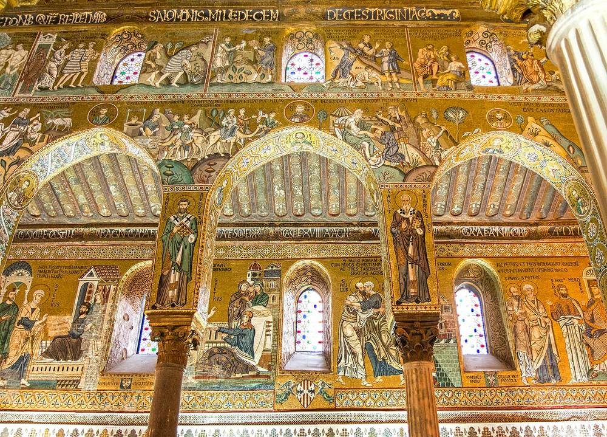<figcaption>Mosaics of the Cappella Palatina · Andrea Schaffer from Sydney, Australia · CC BY 2.0 · resized · <a href="https://commons.wikimedia.org/wiki/File:Cappella_Palatina_(38654373955).jpg" target="_blank" rel="noopener">Wikimedia Commons</a></figcaption></figure><figure class="hero">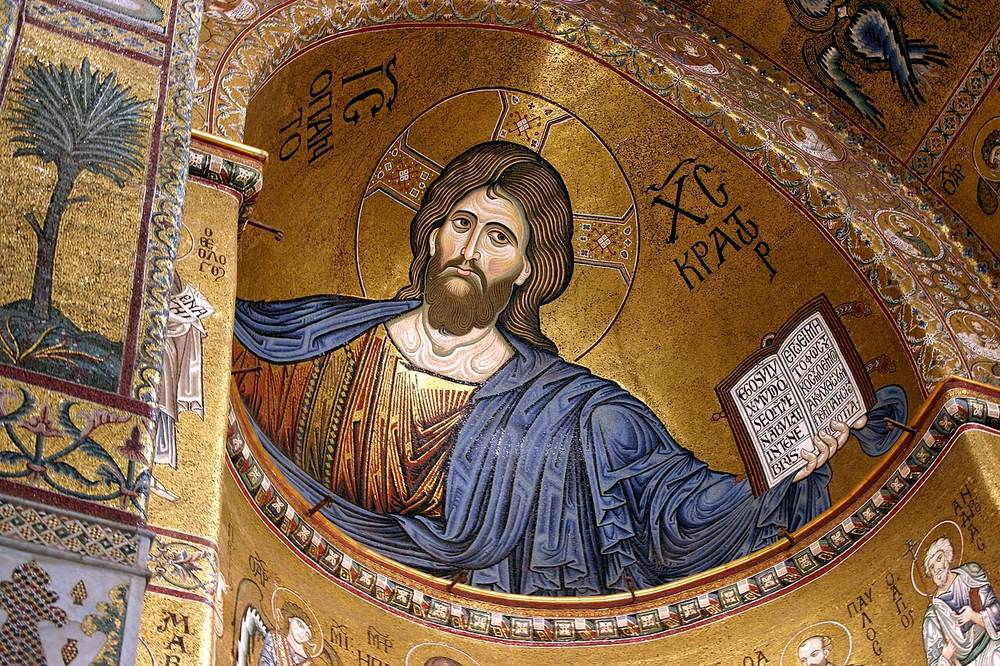<figcaption>Christ Pantocrator, Monreale Cathedral · José Luiz · CC BY-SA 4.0 · resized · <a href="https://commons.wikimedia.org/wiki/File:Christ_Pantocrator_-_Cathedral_of_Monreale_-_Italy_2015_(5).JPG" target="_blank" rel="noopener">Wikimedia Commons</a></figcaption></figure></div><ol class="rail"><li class="mv mv-train"><div class="mv-line"><b>Isola delle Femmine</b> <span class="arrow">→</span> <b>Palermo Centrale</b></div><p class="mv-meta">20 min<span class="cn">20 分钟</span></p><p class="zh">Journey time as given by the conference.<span class="cn">SLT 官网写的时长。</span></p><div class="links"><a class="lk lk-site" href="https://www.google.com/maps/dir/?api=1&amp;origin=Isola+delle+Femmine+station&amp;destination=Palermo+Centrale&amp;travelmode=transit" target="_blank" rel="noopener">Transit route</a><a class="lk lk-site" href="https://www.trenitalia.com/en.html" target="_blank" rel="noopener">Trenitalia</a></div></li><li class="mv mv-walk"><div class="mv-line"><b>Palermo Centrale</b> <span class="arrow">→</span> <b>Mercato di Ballarò</b></div><p class="mv-meta">North along Via Roma, then into the market<span class="cn">沿 Via Roma 往北，再拐进市场</span></p><div class="links"><a class="lk lk-site" href="https://www.google.com/maps/dir/?api=1&amp;origin=Palermo+Centrale&amp;destination=Mercato+di+Ballar%C3%B2%2C+Palermo&amp;travelmode=walking" target="_blank" rel="noopener">Walking route</a></div></li><li class="pl"><h3>Mercato di Ballarò</h3><p class="sub">Arab-style open-air market<span class="cn">阿拉伯式露天市场</span></p><p class="zh">Eat as you walk — arancine, panelle.<span class="cn">边走边吃 arancine、panelle。</span></p><div class="links"><a class="lk lk-map" href="https://www.google.com/maps/search/?api=1&amp;query=Mercato+Ballaro+Palermo" target="_blank" rel="noopener">Map</a></div></li><li class="pl"><h3>Cappella Palatina</h3><p class="sub">Inside the Palazzo dei Normanni<span class="cn">Palazzo dei Normanni 里</span></p><p class="zh">The one thing in Palermo you shouldn&#x27;t miss: a mosaic ceiling where Arab, Norman and Byzantine work sit on top of one another.<span class="cn">全城最该看的一处：阿拉伯、诺曼、拜占庭三种风格叠在一起的马赛克天顶。</span></p><dl class="facts"><dt>Open<span class="cn">开放</span></dt><dd>Daily · Mon–Sat 08:30–16:30 (last tickets) · Sun and holidays 08:30–12:30<span class="cn">每天开 · 周一至周六 08:30–16:30（最后售票）· 周日和节假日 08:30–12:30</span></dd><dt>Tue / Wed<span class="cn">周二 / 周三</span></dt><dd>€15.50 without the royal apartments; Thu–Mon €19 with them<span class="cn">不含王宫套房，票价 €15.50；周四到周一含套房 €19</span></dd><dt>Concessions<span class="cn">优惠</span></dt><dd>Reduced tickets are for EU citizens aged 18–25 only<span class="cn">减价票只给 18–25 岁欧盟公民，你不适用</span></dd><dt>Closed<span class="cn">闭馆</span></dt><dd>25 December, 1 January<span class="cn">12/25、1/1</span></dd><dt>Note<span class="cn">提醒</span></dt><dd>This is the seat of the Sicilian parliament — the official site warns it can close at short notice<span class="cn">这里是西西里议会所在地，官网写可能不提前通知就临时闭馆</span></dd></dl><div class="tags"><span class="tag tg-open">Last tickets 16:30 Mon–Sat<span class="cn">周一至周六 16:30 停止售票</span></span><span class="tag tg-warn">Under restoration; hours can change<span class="cn">礼拜堂在修复，官网写时间可能临时变</span></span></div><div class="links"><a class="lk lk-map" href="https://www.google.com/maps/search/?api=1&amp;query=Cappella+Palatina+Palermo" target="_blank" rel="noopener">Map</a><a class="lk lk-site" href="https://www.federicosecondo.org/en/visit-2/" target="_blank" rel="noopener">Hours and prices</a></div></li><li class="pl"><h3>Palermo Cathedral → Quattro Canti<span class="cn">Cattedrale di Palermo → Quattro Canti</span></h3><p class="sub">Cathedral, then the four-corner crossroads<span class="cn">主教堂 → 四角广场</span></p><div class="links"><a class="lk lk-site" href="https://www.google.com/maps/search/?api=1&amp;query=Cattedrale+di+Palermo" target="_blank" rel="noopener">Cathedral</a><a class="lk lk-site" href="https://www.google.com/maps/search/?api=1&amp;query=Quattro+Canti+Palermo" target="_blank" rel="noopener">Quattro Canti</a></div></li><li class="pl"><h3>Duomo di Monreale</h3><p class="sub">Golden mosaics<span class="cn">金色马赛克</span></p><p class="zh">Plenty of people fly to Sicily for this alone.<span class="cn">很多人专程飞西西里就为这个。</span></p><div class="links"><a class="lk lk-map" href="https://www.google.com/maps/search/?api=1&amp;query=Duomo+di+Monreale" target="_blank" rel="noopener">Map</a></div></li><li class="note n-list"><details><summary>What to eat in Palermo<span class="cn">Palermo 吃什么</span></summary><ul class="bullets"><li>Arancine — fried rice balls (feminine in Sicily)<span class="cn">Arancine 炸饭团（西西里用阴性 arancine）</span></li><li>Panelle — chickpea fritters<span class="cn">Panelle 鹰嘴豆饼</span></li><li>Sfincione — thick Sicilian pizza<span class="cn">Sfincione 西西里厚底披萨</span></li><li>Pani ca&#x27; meusa — spleen sandwich<span class="cn">Pani ca&#x27; meusa 牛脾三明治</span></li><li>Cannoli and cassata<span class="cn">Cannoli 卷筒酥 · Cassata 西西里蛋糕</span></li></ul></details></li></ol></section><section class="day" id="d-2026-12-16" data-date="2026-12-16"><header class="day-head"><div class="day-date"><span class="big">Dec 16</span><span class="day-wd">Wed<br>Day 5 of 23</span></div><div class="day-title"><p class="eyebrow">IT · PMO</p><h2>Last day of the conference → overnight ferry<span class="cn">会议最后一天 → 夜航渡轮</span></h2><p class="sleep"><span class="sleep-k">Staying</span> Ferry cabin<span class="cn">渡轮舱房</span></p></div></header><div class="daylight"><div class="band" role="img" aria-label="Sunrise 07:16, sunset 16:48"><span class="lit" style="left:9.7%;width:73.3%"></span><span class="tick t0" style="left:0%">06</span><span class="tick" style="left:46.2%">12</span><span class="tick t19" style="left:100%">19</span></div><p class="sunline">Sunrise <b>07:16</b> · Sunset <b>16:48</b> · Daylight 9h32</p></div><ol class="rail"><li class="mv mv-train"><div class="mv-line"><b>Isola delle Femmine</b> <span class="arrow">→</span> <b>Porto di Palermo</b></div><p class="mv-meta">Train to Palermo Centrale, then on to the port<span class="cn">火车到 Palermo Centrale，再去港口</span></p><div class="links"><a class="lk lk-site" href="https://www.google.com/maps/dir/?api=1&amp;origin=Isola+delle+Femmine+station&amp;destination=Porto+di+Palermo&amp;travelmode=transit" target="_blank" rel="noopener">Transit route</a><a class="lk lk-site" href="https://www.gnv.it/en/ports/sicily/palermo" target="_blank" rel="noopener">GNV Palermo port</a></div></li><li class="mv mv-ferry"><div class="mv-line"><b>Palermo</b> <span class="arrow">→</span> <b>Napoli</b></div><p class="mv-meta">evening · next morning · GNV (Grimaldi also sails this route) · approx 9h30–12h<span class="cn">GNV（也有 Grimaldi） · 约 9h30–12h</span></p><p class="zh">There is a sailing on 16 December — GNV&#x27;s calendar shows it from €38. In December they do not sail on the 6th, 13th, 24th, 25th, 27th or 31st. Departure time isn&#x27;t shown on the calendar; the September Wednesday sailing left at 21:00 and arrived 06:30. Book a cabin, not a seat.<span class="cn">✅ 12/16 有船 —— GNV 官方开航日历上这天是 €38 起。12 月里 6、13、24、25、27、31 号不开航。几点开船日历上不显示：9 月的周三班次是 GNV 21:00 开、次日 06:30 到（Direct Ferries 时刻表），12 月时刻订票时再确认。一定订舱房，别订座位。</span></p><div class="links"><a class="lk lk-site" href="https://www.gnv.it/en/ferries-destinations/sicily/naples-palermo" target="_blank" rel="noopener">GNV route</a><a class="lk lk-site" href="https://www.grimaldi-lines.com/en/" target="_blank" rel="noopener">Grimaldi</a><a class="lk lk-site" href="https://www.directferries.com/palermo_naples_ferry.htm" target="_blank" rel="noopener">Direct Ferries</a></div></li><li class="note n-photo"><p class="note-title">Photographs<span class="cn">拍照</span></p><p class="zh">Palermo&#x27;s lights from the stern as you leave. If the ship docks at 06:30 the sun doesn&#x27;t rise in Naples until 07:21, so it will still be dark — check the December timetable before planning a sunrise on deck.<span class="cn">出港回望帕勒莫灯火。⚠️ 若按 9 月那班的时刻 06:30 靠岸，那不勒斯日出要到 07:21，靠岸时天还没亮 —— 拍日出得看 12 月的实际时刻，别按旧页那句「靠岸前 40 分钟上甲板」安排。</span></p></li></ol></section><section class="day" id="d-2026-12-17" data-date="2026-12-17"><header class="day-head"><div class="day-date"><span class="big">Dec 17</span><span class="day-wd">Thu<br>Day 6 of 23</span></div><div class="day-title"><p class="eyebrow">IT · NAP</p><h2>Naples · the old town and My Brilliant Friend<span class="cn">Naples · 《我的天才女友》与老城</span></h2><p class="sleep"><span class="sleep-k">Staying</span> Naples<span class="cn">那不勒斯</span></p></div></header><div class="daylight"><div class="band" role="img" aria-label="Sunrise 07:21, sunset 16:36"><span class="lit" style="left:10.4%;width:71.2%"></span><span class="tick t0" style="left:0%">06</span><span class="tick" style="left:46.2%">12</span><span class="tick t19" style="left:100%">19</span></div><p class="sunline">Sunrise <b>07:21</b> · Sunset <b>16:36</b> · Daylight 9h15</p></div><div class="heros"><figure class="hero">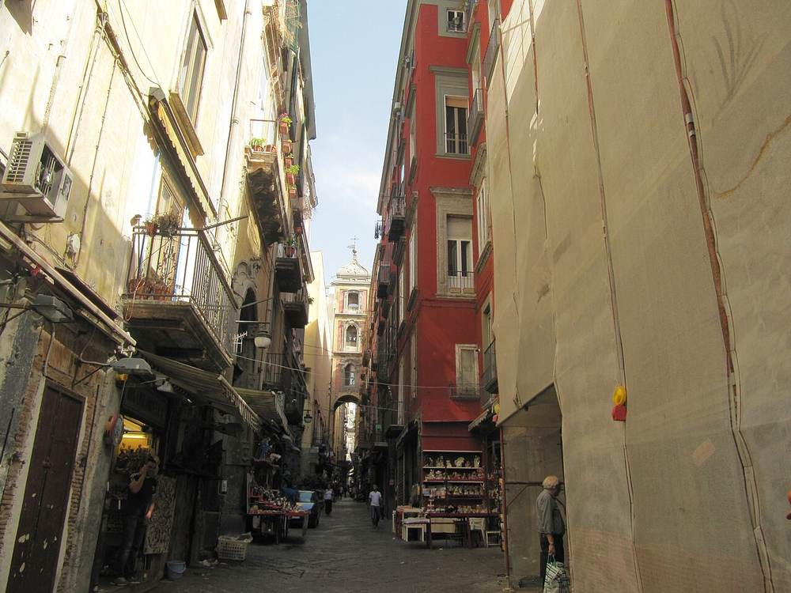<figcaption>Via San Gregorio Armeno, the nativity-figure street · Palickap · CC BY-SA 4.0 · resized · <a href="https://commons.wikimedia.org/wiki/File:Napoli,_Via_San_Gregorio_Armeno.jpg" target="_blank" rel="noopener">Wikimedia Commons</a></figcaption></figure></div><ol class="rail"><li class="note n-info"><p class="note-title">Getting around Naples<span class="cn">那不勒斯市内交通</span></p><p class="zh">Metro Line 1 (yellow) and Line 2 (blue), plus four funiculars up to Vomero. Single and day tickets from the machines in the stations. Toledo station on Line 1 is worth seeing in its own right.<span class="cn">地铁 Linea 1（黄线）、Linea 2（蓝线），加 4 条缆车上 Vomero。站里自动售票机买单程或一日票。Linea 1 的 Toledo 站本身就值得看。</span></p><div class="links"><a class="lk lk-site" href="https://www.anm.it/" target="_blank" rel="noopener">ANM (city transport)</a><a class="lk lk-site" href="https://www.google.com/maps/search/?api=1&amp;query=Toledo+metro+station+Napoli" target="_blank" rel="noopener">Toledo station</a></div></li><li class="mv mv-metro"><div class="mv-line"><b>Napoli Centrale</b> <span class="arrow">→</span> <b>Gianturco</b></div><p class="mv-meta">Line 2<span class="cn">Linea 2</span></p><div class="links"><a class="lk lk-site" href="https://www.google.com/maps/dir/?api=1&amp;destination=Biblioteca+Andreoli%2C+via+Leonardo+Murialdo%2C+Napoli&amp;travelmode=transit" target="_blank" rel="noopener">Transit route</a><a class="lk lk-site" href="https://www.anm.it/" target="_blank" rel="noopener">ANM</a></div></li><li class="pl"><h3>Rione Luzzatti</h3><p class="sub">The neighbourhood behind My Brilliant Friend · about 2 hours<span class="cn">《我的天才女友》灵感来源街区 · 约 2 小时</span></p><p class="zh">Outside the Andreoli library on via Leonardo Murialdo there&#x27;s a mural of Lila and Lenù by the photographer Eduardo Castaldo. The figures have no faces on purpose — it isn&#x27;t damage. Walk Lo Stradone and past the Chiesa della Sacra Famiglia.<span class="cn">Biblioteca Andreoli 门口（via Leonardo Murialdo）有 Lila 和 Lenù 的壁画，摄影师 Eduardo Castaldo 的作品。人物没有脸是创作意图，不是被涂掉。走一遍 Lo Stradone 主街和 Chiesa della Sacra Famiglia。</span></p><dl class="facts"><dt>Worth knowing<span class="cn">注意</span></dt><dd>The neighbourhood in the series was built on a set in Marcianise, near Caserta, and isn&#x27;t open. This is the real place from the books.<span class="cn">剧里的街区是在 Caserta 的 Marcianise 影棚搭的，不开放。你去的是书里真实的世界。</span></dd></dl><div class="tags"><span class="tag tg-film">L&#x27;amica geniale</span><span class="tag tg-warn">An ordinary residential area — go in daylight, don&#x27;t photograph into people&#x27;s windows<span class="cn">普通居民区，白天去，别对着人家窗户拍</span></span></div><div class="links"><a class="lk lk-map" href="https://www.google.com/maps/search/?api=1&amp;query=Rione+Luzzatti+Napoli" target="_blank" rel="noopener">Map</a><a class="lk lk-site" href="https://www.google.com/maps/search/?api=1&amp;query=Biblioteca+Andreoli+via+Leonardo+Murialdo+Napoli" target="_blank" rel="noopener">Where the mural is</a></div></li><li class="mv mv-metro"><div class="mv-line"><b>Rione Luzzatti</b> <span class="arrow">→</span> <b>Via dei Tribunali</b></div><p class="mv-meta">Back to the old town for lunch<span class="cn">回老城吃午饭</span></p><div class="links"><a class="lk lk-site" href="https://www.google.com/maps/dir/?api=1&amp;origin=Rione+Luzzatti%2C+Napoli&amp;destination=Via+dei+Tribunali%2C+Napoli&amp;travelmode=transit" target="_blank" rel="noopener">Transit route</a></div></li><li class="pl"><h3>Via dei Tribunali</h3><p class="sub">Lunch · pizza<span class="cn">午餐 · 披萨</span></p><div class="links"><a class="lk lk-map" href="https://www.google.com/maps/search/?api=1&amp;query=Via+dei+Tribunali+Napoli" target="_blank" rel="noopener">Map</a></div></li><li class="pl"><h3>Spaccanapoli → Via San Gregorio Armeno</h3><p class="sub">The spine of the old town → the nativity-figure street<span class="cn">老城中轴 → 圣诞马槽一条街</span></p><p class="zh">Via Benedetto Croce and Via San Biagio dei Librai form the straight line that splits the old town in two. Turn into San Gregorio Armeno, where the presepe workshops are at their busiest in December.<span class="cn">Via Benedetto Croce → Via San Biagio dei Librai 这条直街把老城劈成两半。拐进 San Gregorio Armeno，手工 presepe 工坊 12 月最旺。</span></p><div class="tags"><span class="tag tg-film">Parthenope</span></div><div class="links"><a class="lk lk-site" href="https://www.google.com/maps/search/?api=1&amp;query=Spaccanapoli+Napoli" target="_blank" rel="noopener">Spaccanapoli</a><a class="lk lk-site" href="https://www.google.com/maps/search/?api=1&amp;query=Via+San+Gregorio+Armeno+Napoli" target="_blank" rel="noopener">San Gregorio Armeno</a></div></li><li class="pl"><h3>Cappella Sansevero</h3><p class="sub">The Veiled Christ<span class="cn">《蒙纱的基督》</span></p><p class="zh">Very small inside — book ahead.<span class="cn">地方极小，务必提前订票。</span></p><dl class="facts"><dt>Open<span class="cn">开放</span></dt><dd>9:00–19:00</dd></dl><div class="tags"><span class="tag tg-book">Booking required<span class="cn">需预约</span></span><span class="tag tg-closed">Closed Tuesdays · this is a Thursday<span class="cn">周二闭馆 · 今天周四</span></span></div><div class="links"><a class="lk lk-map" href="https://www.google.com/maps/search/?api=1&amp;query=Cappella+Sansevero+Napoli" target="_blank" rel="noopener">Map</a><a class="lk lk-site" href="https://www.museosansevero.it/" target="_blank" rel="noopener">Book online</a></div></li><li class="mv mv-walk"><div class="mv-line"><b>Cappella Sansevero</b> <span class="arrow">→</span> <b>Piazza del Plebiscito</b></div><p class="mv-meta">16:00 · On foot, through the old town</p><div class="links"><a class="lk lk-site" href="https://www.google.com/maps/dir/?api=1&amp;origin=Cappella+Sansevero%2C+Napoli&amp;destination=Piazza+del+Plebiscito%2C+Napoli&amp;travelmode=walking" target="_blank" rel="noopener">Walking route</a></div></li><li class="pl"><h3>Piazza del Plebiscito → Galleria Umberto I → Castel dell&#x27;Ovo</h3><p class="sub">Sunset 16:40<span class="cn">日落 16:40</span></p><p class="zh">The scene in The Hand of God where Patrizia meets San Gennaro was shot on Plebiscito. Walk along the water to Castel dell&#x27;Ovo for sunset — the castle in silhouette with Vesuvius behind it.<span class="cn">《上帝之手》里 Patrizia 姑妈遇见圣真纳罗那场戏在 Plebiscito 拍。沿海边走到 Castel dell&#x27;Ovo 看日落，城堡剪影 + 维苏威，长焦压缩。</span></p><div class="tags"><span class="tag tg-film">È stata la mano di Dio</span><span class="tag tg-film">Parthenope</span></div><div class="links"><a class="lk lk-site" href="https://www.google.com/maps/search/?api=1&amp;query=Piazza+del+Plebiscito+Napoli" target="_blank" rel="noopener">Plebiscito</a><a class="lk lk-site" href="https://www.google.com/maps/search/?api=1&amp;query=Castel+dell%27Ovo+Napoli" target="_blank" rel="noopener">Castel dell&#x27;Ovo</a><a class="lk lk-site" href="https://www.google.com/maps/search/?api=1&amp;query=Gran+Caffe+Gambrinus+Napoli" target="_blank" rel="noopener">Caffè Gambrinus</a></div></li><li class="note n-list"><details><summary>What to eat in Naples<span class="cn">Naples 吃什么</span></summary><ul class="bullets"><li>Pizza margherita or marinara, from a wood oven</li><li>Sfogliatella — riccia (crisp) or frolla (soft)</li><li>Babà soaked in rum</li><li>Friggitoria: fried pizza, crocchè, zeppoline</li><li>Espresso standing at the bar</li></ul></details></li></ol></section><section class="day" id="d-2026-12-18" data-date="2026-12-18"><header class="day-head"><div class="day-date"><span class="big">Dec 18</span><span class="day-wd">Fri<br>Day 7 of 23</span></div><div class="day-title"><p class="eyebrow">IT · NAP</p><h2>Pompeii and Vomero<span class="cn">Pompeii + Vomero</span></h2><p class="sleep"><span class="sleep-k">Staying</span> Naples<span class="cn">那不勒斯</span></p></div></header><div class="daylight"><div class="band" role="img" aria-label="Sunrise 07:22, sunset 16:37"><span class="lit" style="left:10.5%;width:71.2%"></span><span class="tick t0" style="left:0%">06</span><span class="tick" style="left:46.2%">12</span><span class="tick t19" style="left:100%">19</span></div><p class="sunline">Sunrise <b>07:22</b> · Sunset <b>16:37</b> · Daylight 9h15</p></div><div class="heros"><figure class="hero">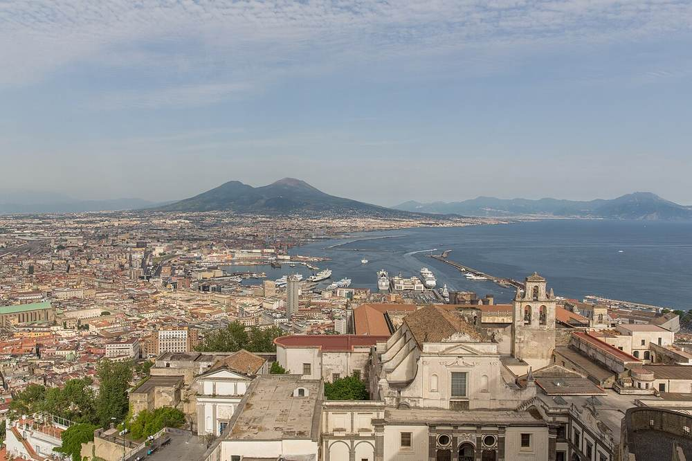<figcaption>Vesuvius from Castel Sant&#x27;Elmo · Ekrem Canli · CC BY-SA 4.0 · resized · <a href="https://commons.wikimedia.org/wiki/File:Vesuvius_from_SantElmo_I.jpg" target="_blank" rel="noopener">Wikimedia Commons</a></figcaption></figure><figure class="hero">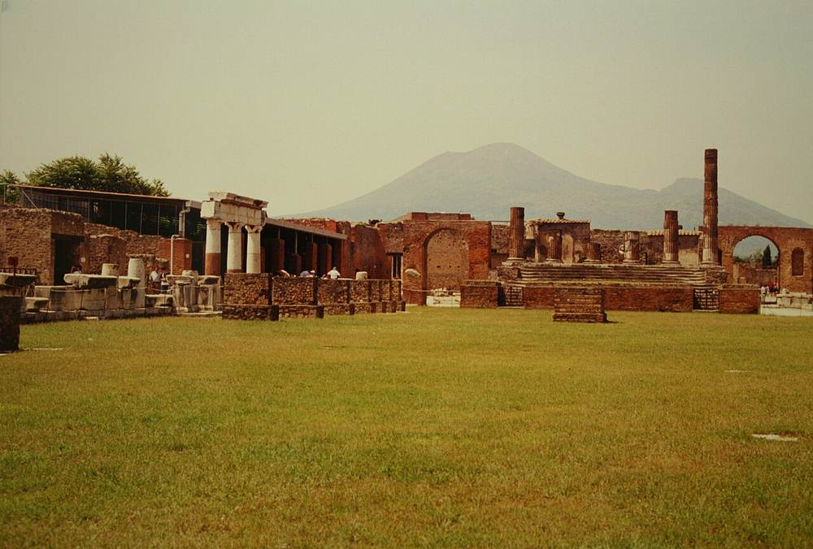<figcaption>The forum at Pompeii, with Vesuvius · Gary Todd from Xinzheng, China · CC0 · resized · <a href="https://commons.wikimedia.org/wiki/File:Pompeii_Forum_%26_Mt._Vesuvius_(9809458366).jpg" target="_blank" rel="noopener">Wikimedia Commons</a></figcaption></figure></div><ol class="rail"><li class="mv mv-train"><div class="mv-line"><b>Napoli Garibaldi</b> <span class="arrow">→</span> <b>Pompei Scavi</b></div><p class="mv-meta">08:30 · Circumvesuviana · approx 35 min<span class="cn">Circumvesuviana · 约 35 分钟</span></p><div class="links"><a class="lk lk-site" href="https://www.google.com/maps/dir/?api=1&amp;origin=Napoli+Garibaldi&amp;destination=Pompei+Scavi+-+Villa+dei+Misteri+station&amp;travelmode=transit" target="_blank" rel="noopener">Transit route</a><a class="lk lk-site" href="https://www.eavsrl.it/" target="_blank" rel="noopener">EAV (Circumvesuviana)</a></div></li><li class="pl"><h3>Pompeii<span class="cn">Pompeii 古城遗址</span></h3><p class="sub">Parco Archeologico di Pompei</p><p class="zh">In winter it opens at 9:00 and last entry is 15:30. Timed entry only applies 16 March – 14 October, so no slot to fight for in December — but tickets are issued in your name and the site caps at 20,000 people a day. Bring your passport.<span class="cn">冬季 9:00 开门、15:30 停止入场（官网时刻表）。分时段预约只在 3/16–10/14 施行，12 月不用抢时段，但**门票是实名的**，官网写明每天限 2 万人 —— 带护照。</span></p><dl class="facts"><dt>Tickets<span class="cn">门票</span></dt><dd>€20 for the site · €25 for Pompeii+ including the villas outside the walls<span class="cn">只看古城 €20 · 含城外别墅的 Pompeii+ €25</span></dd><dt>Concessions<span class="cn">优惠</span></dt><dd>The €2 rate is for EU citizens aged 18–25 only<span class="cn">€2 只给 18–25 岁欧盟公民，你不适用</span></dd><dt>Closed<span class="cn">闭园</span></dt><dd>25 December and 1 January — not an issue on the 18th<span class="cn">12/25 和 1/1（你 12/18 去，不受影响）</span></dd></dl><div class="tags"><span class="tag tg-book">Named ticket — bring passport<span class="cn">实名票，带护照</span></span><span class="tag tg-deadline">Last entry 15:30 in winter<span class="cn">冬季 15:30 停止入场</span></span></div><div class="links"><a class="lk lk-map" href="https://www.google.com/maps/search/?api=1&amp;query=Pompeii+Archaeological+Park" target="_blank" rel="noopener">Map</a><a class="lk lk-site" href="https://pompeiisites.org/en/visiting-info/timetables-and-tickets/" target="_blank" rel="noopener">Hours and tickets</a></div></li><li class="mv mv-train"><div class="mv-line"><b>Pompei Scavi</b> <span class="arrow">→</span> <b>Napoli</b></div><p class="mv-meta">13:00 · Circumvesuviana back into town for lunch<span class="cn">Circumvesuviana 回市区吃午饭</span></p><div class="links"><a class="lk lk-site" href="https://www.google.com/maps/dir/?api=1&amp;origin=Pompei+Scavi+-+Villa+dei+Misteri+station&amp;destination=Napoli+Garibaldi&amp;travelmode=transit" target="_blank" rel="noopener">Transit route</a></div></li><li class="mv mv-funicular"><div class="mv-line"><b>Piazza Augusteo</b> <span class="arrow">→</span> <b>Vomero</b></div><p class="mv-meta">15:00 · Funicolare Centrale (or the Montesanto line to Morghen)<span class="cn">Funicolare Centrale（或 Montesanto 线到 Morghen）</span></p><div class="links"><a class="lk lk-site" href="https://www.google.com/maps/dir/?api=1&amp;destination=Certosa+di+San+Martino%2C+Napoli&amp;travelmode=transit" target="_blank" rel="noopener">Transit route</a><a class="lk lk-site" href="https://www.anm.it/" target="_blank" rel="noopener">ANM</a></div></li><li class="pl"><h3>Certosa di San Martino</h3><p class="sub">Arrive before 15:30<span class="cn">15:30 前必须到</span></p><p class="zh">From up here you can see the straight cut Spaccanapoli makes through the old town.<span class="cn">从这里往下能清楚看到 Spaccanapoli 那条把老城劈开的直线。</span></p><dl class="facts"><dt>Open<span class="cn">开放</span></dt><dd>8:30–17:00</dd><dt>Ticket<span class="cn">门票</span></dt><dd>€6</dd></dl><div class="tags"><span class="tag tg-closed">Closed Wednesdays · this is a Friday<span class="cn">周三闭馆 · 今天周五</span></span><span class="tag tg-deadline">Last entry 16:00<span class="cn">最后入场 16:00</span></span></div><div class="links"><a class="lk lk-map" href="https://www.google.com/maps/search/?api=1&amp;query=Certosa+di+San+Martino+Napoli" target="_blank" rel="noopener">Map</a></div></li><li class="pl"><h3>Castel Sant&#x27;Elmo rooftop<span class="cn">Castel Sant&#x27;Elmo 屋顶平台</span></h3><p class="sub">16:00–16:40 · the best view of the whole trip<span class="cn">16:00–16:40 · 全程最强的一张</span></p><p class="zh">The entire bay, Vesuvius, and the sun going down. About €5.<span class="cn">整个海湾 + 维苏威 + 夕阳。门票约 €5。</span></p><div class="links"><a class="lk lk-map" href="https://www.google.com/maps/search/?api=1&amp;query=Castel+Sant%27Elmo+Napoli" target="_blank" rel="noopener">Map</a></div></li><li class="pl"><h3>Via San Domenico · Via Scarlatti</h3><p class="sub">The Schisa family&#x27;s building in The Hand of God<span class="cn">《上帝之手》Schisa 一家的公寓楼</span></p><p class="zh">The actual building Sorrentino lived in as a boy.<span class="cn">就是 Sorrentino 小时候真住过的那栋楼。</span></p><div class="tags"><span class="tag tg-film">È stata la mano di Dio</span></div><div class="links"><a class="lk lk-map" href="https://www.google.com/maps/search/?api=1&amp;query=Via+San+Domenico+Vomero+Napoli" target="_blank" rel="noopener">Map</a></div></li><li class="pl"><h3>Museo Archeologico Nazionale<span class="cn">Museo Archeologico Nazionale (MANN)</span></h3><p class="sub">If there&#x27;s time<span class="cn">时间够再去</span></p><p class="zh">Most of what was dug out of Pompeii is actually here.<span class="cn">庞贝挖出来的好东西其实都在这儿。</span></p><dl class="facts"><dt>Open<span class="cn">开放</span></dt><dd>9:00–19:30</dd><dt>Ticket<span class="cn">门票</span></dt><dd>about €22<span class="cn">约 €22</span></dd></dl><div class="tags"><span class="tag tg-closed">Closed Tuesdays · this is a Friday<span class="cn">周二闭馆 · 今天周五</span></span></div><div class="links"><a class="lk lk-map" href="https://www.google.com/maps/search/?api=1&amp;query=Museo+Archeologico+Nazionale+Napoli" target="_blank" rel="noopener">Map</a></div></li></ol></section><section class="day" id="d-2026-12-19" data-date="2026-12-19"><header class="day-head"><div class="day-date"><span class="big">Dec 19</span><span class="day-wd">Sat<br>Day 8 of 23</span></div><div class="day-title"><p class="eyebrow">IT · ROM</p><h2>Naples → Rome · Vatican day (has to be a Saturday)<span class="cn">Naples → Rome · 梵蒂冈日（必须周六）</span></h2><p class="sleep"><span class="sleep-k">Staying</span> Rome<span class="cn">罗马</span></p></div></header><div class="daylight"><div class="band" role="img" aria-label="Sunrise 07:33, sunset 16:41"><span class="lit" style="left:11.9%;width:70.3%"></span><span class="tick t0" style="left:0%">06</span><span class="tick" style="left:46.2%">12</span><span class="tick t19" style="left:100%">19</span></div><p class="sunline">Sunrise <b>07:33</b> · Sunset <b>16:41</b> · Daylight 9h08</p></div><div class="heros"><figure class="hero">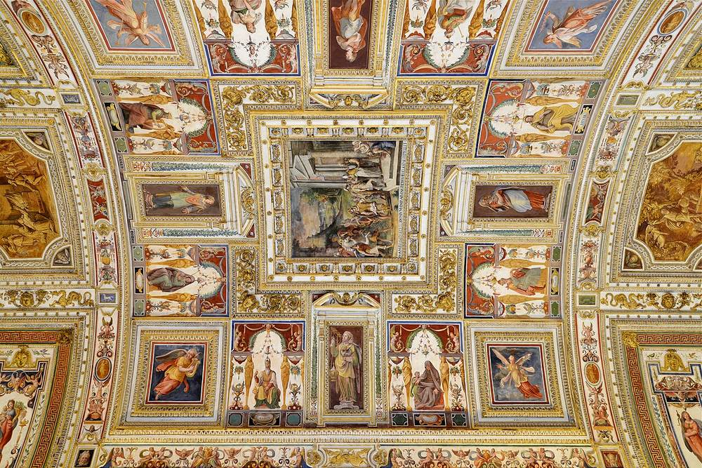<figcaption>The Gallery of Maps, Vatican Museums · Alvesgaspar · CC BY-SA 4.0 · resized · <a href="https://commons.wikimedia.org/wiki/File:Galleria_delle_carte_geografiche_(Vatican_Museums)_September_2015-5.jpg" target="_blank" rel="noopener">Wikimedia Commons</a></figcaption></figure></div><ol class="rail"><li class="mv mv-train"><div class="mv-line"><b>Napoli Centrale</b> <span class="arrow">→</span> <b>Roma Termini</b></div><p class="mv-meta">early · Frecciarossa / Italo high speed · fastest 53 min<span class="cn">Frecciarossa / Italo 高铁 · 最快 53 分钟</span></p><p class="zh">Normally 48 trains a day, 46 of them direct. Take an early one to make the morning slot at the Vatican.<span class="cn">平时每天 48 班、其中 46 班直达（Trainline 线路页）。要赶梵蒂冈上午的时段票，坐最早那几班。</span></p><div class="links"><a class="lk lk-site" href="https://www.trenitalia.com/en.html" target="_blank" rel="noopener">Trenitalia</a><a class="lk lk-site" href="https://www.italotreno.com/en" target="_blank" rel="noopener">Italo</a></div></li><li class="mv mv-metro"><div class="mv-line"><b>Roma Termini</b> <span class="arrow">→</span> <b>Musei Vaticani</b></div><p class="mv-meta">Metro, or about 30 minutes on foot</p><div class="links"><a class="lk lk-site" href="https://www.google.com/maps/dir/?api=1&amp;origin=Roma+Termini&amp;destination=Musei+Vaticani&amp;travelmode=transit" target="_blank" rel="noopener">Transit route</a><a class="lk lk-site" href="https://www.atac.roma.it/en" target="_blank" rel="noopener">ATAC</a></div></li><li class="pl"><h3>Vatican Museums and the Sistine Chapel<span class="cn">Musei Vaticani + Cappella Sistina</span></h3><p class="sub">Book the earliest slot<span class="cn">订最早的时段</span></p><dl class="facts"><dt>Ticket<span class="cn">门票</span></dt><dd>about €20<span class="cn">约 €20</span></dd></dl><div class="tags"><span class="tag tg-closed">Closed Sundays<span class="cn">周日闭馆</span></span><span class="tag tg-book">Timed entry<span class="cn">时段票</span></span><span class="tag tg-warn">No selfie sticks or tripods · no photography at all in the Sistine · shoulders and knees covered<span class="cn">禁自拍杆和三脚架 · 西斯廷全面禁拍 · 遮肩遮膝</span></span></div><div class="links"><a class="lk lk-map" href="https://www.google.com/maps/search/?api=1&amp;query=Musei+Vaticani" target="_blank" rel="noopener">Map</a><a class="lk lk-site" href="https://tickets.museivaticani.va/" target="_blank" rel="noopener">Official ticketing</a></div></li><li class="pl"><h3>St Peter&#x27;s Basilica<span class="cn">Basilica di San Pietro</span></h3><p class="sub">Free to enter, long security queue; the dome is extra<span class="cn">免费进，安检队长；登穹顶另收费</span></p><div class="links"><a class="lk lk-map" href="https://www.google.com/maps/search/?api=1&amp;query=Basilica+di+San+Pietro" target="_blank" rel="noopener">Map</a></div></li><li class="mv mv-walk"><div class="mv-line"><b>San Pietro</b> <span class="arrow">→</span> <b>Castel Sant&#x27;Angelo</b></div><p class="mv-meta">Along Via della Conciliazione<span class="cn">沿 Via della Conciliazione</span></p><div class="links"><a class="lk lk-site" href="https://www.google.com/maps/dir/?api=1&amp;origin=Piazza+San+Pietro&amp;destination=Castel+Sant%27Angelo&amp;travelmode=walking" target="_blank" rel="noopener">Walking route</a></div></li><li class="pl"><h3>Castel Sant&#x27;Angelo → Ponte Sant&#x27;Angelo → Via dei Coronari</h3><p class="sub">Bernini&#x27;s angels on the bridge · a street of antique shops<span class="cn">贝尼尼天使桥 · 古董店老街</span></p><div class="links"><a class="lk lk-site" href="https://www.google.com/maps/search/?api=1&amp;query=Castel+Sant%27Angelo" target="_blank" rel="noopener">Castel Sant&#x27;Angelo</a><a class="lk lk-site" href="https://www.google.com/maps/search/?api=1&amp;query=Ponte+Sant%27Angelo" target="_blank" rel="noopener">Ponte Sant&#x27;Angelo</a><a class="lk lk-site" href="https://www.google.com/maps/search/?api=1&amp;query=Via+dei+Coronari+Roma" target="_blank" rel="noopener">Via dei Coronari</a></div></li><li class="pl"><h3>Jewish Ghetto<span class="cn">Ghetto Ebraico</span></h3><p class="sub">Dinner · fried artichokes<span class="cn">晚饭 · 炸洋蓟</span></p><div class="links"><a class="lk lk-map" href="https://www.google.com/maps/search/?api=1&amp;query=Ghetto+Ebraico+Roma" target="_blank" rel="noopener">Map</a><a class="lk lk-site" href="https://www.google.com/maps/dir/?api=1&amp;origin=Via+dei+Coronari%2C+Roma&amp;destination=Ghetto+Ebraico%2C+Roma&amp;travelmode=walking" target="_blank" rel="noopener">Walking route</a></div></li><li class="note n-list"><details><summary>What to eat in Rome<span class="cn">Rome 吃什么</span></summary><ul class="bullets"><li>Cacio e pepe, carbonara, amatriciana, gricia</li><li>Carciofi alla giudia — fried artichokes, in the Ghetto</li><li>Supplì — fried rice balls</li><li>Pizza al taglio, sold by weight</li><li>Maritozzo with cream, for breakfast</li></ul></details></li></ol></section><section class="day" id="d-2026-12-20" data-date="2026-12-20"><header class="day-head"><div class="day-date"><span class="big">Dec 20</span><span class="day-wd">Sun<br>Day 9 of 23</span></div><div class="day-title"><p class="eyebrow">IT · ROM</p><h2>Ancient Rome and The Great Beauty<span class="cn">古罗马 + 《绝美之城》</span></h2><p class="sleep"><span class="sleep-k">Staying</span> Rome<span class="cn">罗马</span></p></div></header><div class="daylight"><div class="band" role="img" aria-label="Sunrise 07:34, sunset 16:41"><span class="lit" style="left:12.1%;width:70.1%"></span><span class="tick t0" style="left:0%">06</span><span class="tick" style="left:46.2%">12</span><span class="tick t19" style="left:100%">19</span></div><p class="sunline">Sunrise <b>07:34</b> · Sunset <b>16:41</b> · Daylight 9h07</p></div><div class="heros"><figure class="hero">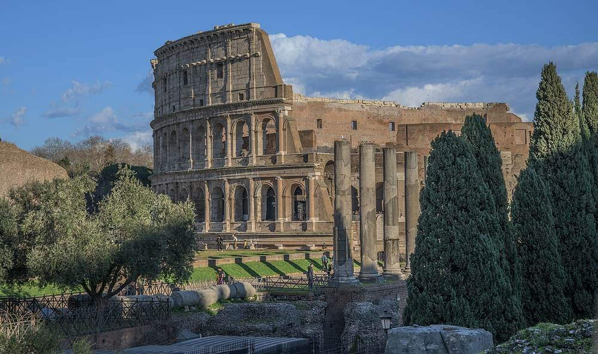<figcaption>The Colosseum and the Roman Forum · Wilfredor · CC0 · resized · <a href="https://commons.wikimedia.org/wiki/File:Colosseum_of_Rome_and_Roman_forum.jpg" target="_blank" rel="noopener">Wikimedia Commons</a></figcaption></figure><figure class="hero">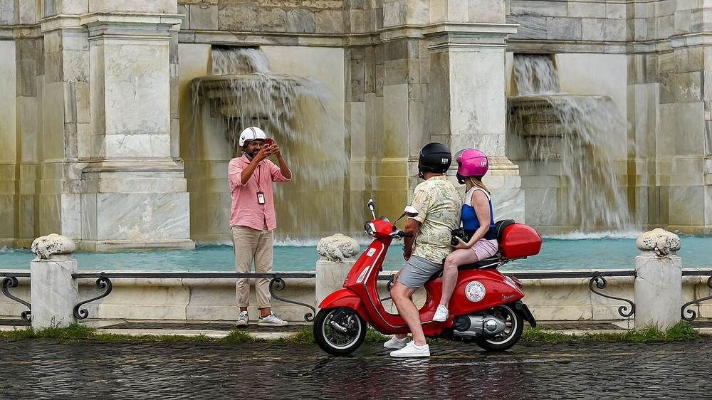<figcaption>Fontana dell&#x27;Acqua Paola · Jorge Franganillo · CC BY 2.0 · resized · <a href="https://commons.wikimedia.org/wiki/File:Roma_Fontana_dell%27Acqua_Paola_(52345941605).jpg" target="_blank" rel="noopener">Wikimedia Commons</a></figcaption></figure></div><ol class="rail"><li class="pl"><h3>Colosseum, Roman Forum and Palatine<span class="cn">Colosseo + Foro Romano + Palatino</span></h3><p class="sub">Morning · one combined ticket<span class="cn">上午 · 联票</span></p><p class="zh">The best view isn&#x27;t from the main entrance — it&#x27;s from Via Nicola Salvi, walking up towards Colle Oppio.<span class="cn">最好的机位不在正门，在 Via Nicola Salvi 往 Colle Oppio 上走那段。</span></p><dl class="facts"><dt>Ticket<span class="cn">门票</span></dt><dd>about €18–24<span class="cn">约 €18–24</span></dd></dl><div class="tags"><span class="tag tg-book">On sale from 20 November<span class="cn">11/20 开售</span></span><span class="tag tg-deadline">Last entry 15:30 in winter<span class="cn">冬季 15:30 停止入场</span></span></div><div class="links"><a class="lk lk-map" href="https://www.google.com/maps/search/?api=1&amp;query=Colosseo+Roma" target="_blank" rel="noopener">Map</a><a class="lk lk-site" href="https://ticketing.colosseo.it/en/" target="_blank" rel="noopener">Official ticketing</a><a class="lk lk-site" href="https://www.google.com/maps/dir/?api=1&amp;destination=Colosseo%2C+Roma&amp;travelmode=transit" target="_blank" rel="noopener">Transit route</a></div></li><li class="mv mv-walk"><div class="mv-line"><b>Colosseo</b> <span class="arrow">→</span> <b>Piazza Venezia</b></div><p class="mv-meta">Via dei Fori Imperiali</p><div class="links"><a class="lk lk-site" href="https://www.google.com/maps/dir/?api=1&amp;origin=Colosseo%2C+Roma&amp;destination=Piazza+Venezia%2C+Roma&amp;travelmode=walking" target="_blank" rel="noopener">Walking route</a></div></li><li class="pl"><h3>Pantheon → Piazza Navona → Trevi Fountain<span class="cn">Pantheon → Piazza Navona → Fontana di Trevi</span></h3><p class="sub">After lunch<span class="cn">午饭后</span></p><div class="links"><a class="lk lk-site" href="https://www.google.com/maps/search/?api=1&amp;query=Pantheon+Roma" target="_blank" rel="noopener">Pantheon</a><a class="lk lk-site" href="https://www.google.com/maps/search/?api=1&amp;query=Piazza+Navona" target="_blank" rel="noopener">Navona</a><a class="lk lk-site" href="https://www.google.com/maps/search/?api=1&amp;query=Fontana+di+Trevi" target="_blank" rel="noopener">Trevi</a></div></li><li class="pl"><h3>Fontana dell&#x27;Acqua Paola</h3><p class="sub">Be there by 16:15 · sunset 16:41<span class="cn">16:15 前到位 · 日落 16:41</span></p><p class="zh">The very first shot of The Great Beauty. The Tempietto del Bramante is a few dozen metres away, and the Passeggiata del Gianicolo leads to the terrace by the Garibaldi statue with the whole skyline.<span class="cn">《绝美之城》全片第一个镜头。旁边几十米是 Tempietto del Bramante，再沿 Passeggiata del Gianicolo 走到 Garibaldi 骑马像平台看全城天际线。</span></p><div class="tags"><span class="tag tg-film">La grande bellezza</span></div><div class="links"><a class="lk lk-site" href="https://www.google.com/maps/search/?api=1&amp;query=Fontana+dell%27Acqua+Paola+Roma" target="_blank" rel="noopener">The fountain</a><a class="lk lk-site" href="https://www.google.com/maps/search/?api=1&amp;query=Tempietto+del+Bramante" target="_blank" rel="noopener">Tempietto</a><a class="lk lk-site" href="https://www.google.com/maps/search/?api=1&amp;query=Piazzale+Giuseppe+Garibaldi+Roma" target="_blank" rel="noopener">Gianicolo terrace</a></div></li><li class="mv mv-walk"><div class="mv-line"><b>Gianicolo</b> <span class="arrow">→</span> <b>Trastevere</b></div><p class="mv-meta">The small path down to the left of the fountain — five minutes of steps to Santa Maria in Trastevere<span class="cn">喷泉左边下坡小路，台阶 5 分钟到 Santa Maria in Trastevere</span></p><div class="links"><a class="lk lk-site" href="https://www.google.com/maps/dir/?api=1&amp;origin=Fontana+dell%27Acqua+Paola%2C+Roma&amp;destination=Santa+Maria+in+Trastevere%2C+Roma&amp;travelmode=walking" target="_blank" rel="noopener">Walking route</a></div></li><li class="note n-info"><p class="note-title">Other Great Beauty locations — probably skip<span class="cn">片中其他罗马场景，建议放弃</span></p><p class="zh">The Baths of Caracalla (where the giraffe vanishes) close early in winter; Parco degli Acquedotti is out in the suburbs and takes most of a day.<span class="cn">Terme di Caracalla（长颈鹿消失那场）冬季闭馆早排不下；Parco degli Acquedotti 在郊区，来回大半天。</span></p></li></ol></section><section class="day" id="d-2026-12-21" data-date="2026-12-21"><header class="day-head"><div class="day-date"><span class="big">Dec 21</span><span class="day-wd">Mon<br>Day 10 of 23</span></div><div class="day-title"><p class="eyebrow">IT · FLR</p><h2>Rome → Florence (Monday)<span class="cn">Rome → Florence（周一）</span></h2><p class="sleep"><span class="sleep-k">Staying</span> Florence<span class="cn">佛罗伦萨</span></p></div></header><div class="daylight"><div class="band" role="img" aria-label="Sunrise 07:46, sunset 16:40"><span class="lit" style="left:13.6%;width:68.5%"></span><span class="tick t0" style="left:0%">06</span><span class="tick" style="left:46.2%">12</span><span class="tick t19" style="left:100%">19</span></div><p class="sunline">Sunrise <b>07:46</b> · Sunset <b>16:40</b> · Daylight 8h54</p></div><div class="heros"><figure class="hero">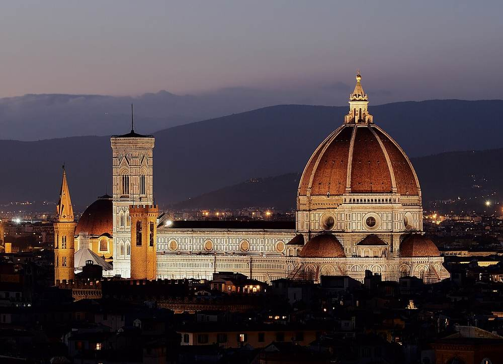<figcaption>The dome, seen from Piazzale Michelangelo · Petar Milošević · CC BY-SA 4.0 · resized · <a href="https://commons.wikimedia.org/wiki/File:Florence_Duomo_from_Michelangelo_hill.jpg" target="_blank" rel="noopener">Wikimedia Commons</a></figcaption></figure></div><ol class="rail"><li class="mv mv-train"><div class="mv-line"><b>Roma Termini</b> <span class="arrow">→</span> <b>Firenze Santa Maria Novella</b></div><p class="mv-meta">High speed, direct · fastest 1h19<span class="cn">高铁，有直达 · 最快 1h19</span></p><p class="zh">47 trains a day.<span class="cn">9/9 查到每天 47 班。</span></p><div class="links"><a class="lk lk-site" href="https://www.trenitalia.com/en.html" target="_blank" rel="noopener">Trenitalia</a><a class="lk lk-site" href="https://www.italotreno.com/en" target="_blank" rel="noopener">Italo</a></div></li><li class="note n-alert"><p class="note-title">Monday: the Uffizi and the Accademia (the David) are both closed<span class="cn">周一：乌菲兹和学院美术馆（大卫像）都闭馆</span></p><p class="zh">The one clash on this trip that can&#x27;t be solved. The cathedral complex, the Ponte Vecchio, Oltrarno and Piazzale Michelangelo are all open as usual.<span class="cn">全程唯一没法完美解决的冲突。主教堂建筑群、老桥、Oltrarno、米开朗基罗广场周一都照常开。</span></p></li><li class="pl"><h3>Duomo · Santa Maria del Fiore</h3><p class="sub">Brunelleschi&#x27;s dome<span class="cn">布鲁内莱斯基穹顶</span></p><dl class="facts"><dt>Dome on Mondays<span class="cn">周一穹顶</span></dt><dd>10:15–16:00</dd><dt>Brunelleschi Pass</dt><dd>€30 — dome, bell tower, baptistery, museum and Santa Reparata, valid 3 days<span class="cn">€30 —— 含穹顶 + 钟楼 + 洗礼堂 + 博物馆 + Santa Reparata，3 天有效</span></dd><dt>Without the dome<span class="cn">不爬穹顶</span></dt><dd>Giotto Pass €20<span class="cn">Giotto Pass €20（没有穹顶）</span></dd><dt>Note<span class="cn">注意</span></dt><dd>The baptistery&#x27;s mosaic ceiling is under restoration and not visible<span class="cn">官网写洗礼堂穹顶马赛克正在修复，看不到</span></dd><dt>The cathedral itself<span class="cn">主教堂本身</span></dt><dd>Free to enter; closed on Sundays and religious holidays<span class="cn">免费进，周日和宗教节日不开放</span></dd></dl><div class="tags"><span class="tag tg-book">Timed ticket, non-changeable<span class="cn">时段票，不可改签</span></span></div><div class="links"><a class="lk lk-map" href="https://www.google.com/maps/search/?api=1&amp;query=Duomo+di+Firenze" target="_blank" rel="noopener">Map</a><a class="lk lk-site" href="https://www.google.com/maps/dir/?api=1&amp;origin=Firenze+Santa+Maria+Novella&amp;destination=Duomo+di+Firenze&amp;travelmode=walking" target="_blank" rel="noopener">Walking route</a><a class="lk lk-site" href="https://tickets.duomo.firenze.it/en/support/prices" target="_blank" rel="noopener">Official prices</a><a class="lk lk-site" href="https://tickets.duomo.firenze.it/en/" target="_blank" rel="noopener">Official ticketing</a></div></li><li class="pl"><h3>Piazza della Signoria and the Loggia dei Lanzi<span class="cn">Piazza della Signoria + Loggia dei Lanzi</span></h3><p class="sub">Sculpture in the open air, free<span class="cn">露天雕塑，免费</span></p><p class="zh">The David on the square is a copy.<span class="cn">广场上那座大卫是复制品。</span></p><div class="links"><a class="lk lk-map" href="https://www.google.com/maps/search/?api=1&amp;query=Piazza+della+Signoria" target="_blank" rel="noopener">Map</a></div></li><li class="pl"><h3>Mercato Centrale</h3><p class="sub">Lunch · the food floor upstairs<span class="cn">午饭 · 楼上美食层</span></p><div class="links"><a class="lk lk-map" href="https://www.google.com/maps/search/?api=1&amp;query=Mercato+Centrale+Firenze" target="_blank" rel="noopener">Map</a></div></li><li class="pl"><h3>Ponte Vecchio → Via Maggio → Piazza Santo Spirito</h3><p class="sub">Across the river into Oltrarno<span class="cn">过河进 Oltrarno</span></p><p class="zh">Photograph the old bridge from Ponte Santa Trinita, side on — not from the bridge itself.<span class="cn">老桥要从 Ponte Santa Trinita 上拍侧面，别站在桥上拍。</span></p><div class="links"><a class="lk lk-site" href="https://www.google.com/maps/search/?api=1&amp;query=Ponte+Vecchio+Firenze" target="_blank" rel="noopener">Ponte Vecchio</a><a class="lk lk-site" href="https://www.google.com/maps/search/?api=1&amp;query=Piazza+Santo+Spirito+Firenze" target="_blank" rel="noopener">Santo Spirito</a></div></li><li class="mv mv-walk"><div class="mv-line"><b>Oltrarno</b> <span class="arrow">→</span> <b>Piazzale Michelangelo</b></div><p class="mv-meta">16:00 · Up the steps along Via di San Niccolò · approx 20 min<span class="cn">沿 Via di San Niccolò 走台阶 · 约 20 分钟</span></p><div class="links"><a class="lk lk-site" href="https://www.google.com/maps/dir/?api=1&amp;origin=Piazza+Santo+Spirito%2C+Firenze&amp;destination=Piazzale+Michelangelo&amp;travelmode=walking" target="_blank" rel="noopener">Walking route</a></div></li><li class="pl"><h3>Piazzale Michelangelo</h3><p class="sub">Sunset 16:43<span class="cn">日落 16:43</span></p><p class="zh">The classic view: the city, the dome and the Arno.<span class="cn">全城 + 穹顶 + 阿诺河的经典机位，105mm 端压缩最好看。</span></p><div class="links"><a class="lk lk-map" href="https://www.google.com/maps/search/?api=1&amp;query=Piazzale+Michelangelo" target="_blank" rel="noopener">Map</a></div></li><li class="note n-list"><details><summary>What to eat in Florence<span class="cn">Florence 吃什么</span></summary><ul class="bullets"><li>Bistecca alla fiorentina</li><li>Lampredotto or bollito sandwich from a street cart</li><li>Crostini di fegatini</li><li>Ribollita and pappa al pomodoro</li><li>Cantuccini with vin santo</li></ul></details></li></ol></section><section class="day" id="d-2026-12-22" data-date="2026-12-22"><header class="day-head"><div class="day-date"><span class="big">Dec 22</span><span class="day-wd">Tue<br>Day 11 of 23</span></div><div class="day-title"><p class="eyebrow">IT · TRN</p><h2>Florence → Turin → Paris (Tuesday)<span class="cn">Florence → Turin → Paris（周二）</span></h2><p class="sleep"><span class="sleep-k">Staying</span> Paris<span class="cn">巴黎</span></p></div></header><div class="daylight"><div class="band" role="img" aria-label="Sunrise 08:05, sunset 16:51"><span class="lit" style="left:16.0%;width:67.4%"></span><span class="tick t0" style="left:0%">06</span><span class="tick" style="left:46.2%">12</span><span class="tick t19" style="left:100%">19</span></div><p class="sunline">Sunrise <b>08:05</b> · Sunset <b>16:51</b> · Daylight 8h46</p></div><div class="heros"><figure class="hero">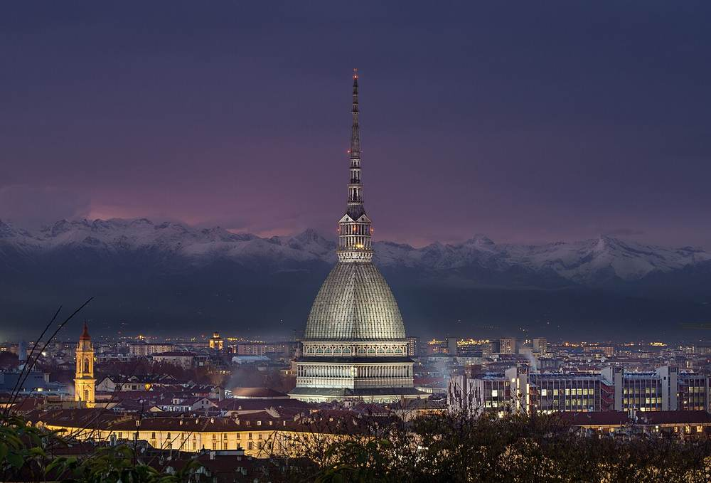<figcaption>Mole Antonelliana at night · Abbrey82 · CC BY-SA 4.0 · resized · <a href="https://commons.wikimedia.org/wiki/File:Mole_Antonelliana_di_sera.jpg" target="_blank" rel="noopener">Wikimedia Commons</a></figcaption></figure></div><ol class="rail"><li class="mv mv-train"><div class="mv-line"><b>Firenze Santa Maria Novella</b> <span class="arrow">→</span> <b>Torino</b></div><p class="mv-meta">morning · fastest 2h54<span class="cn">最快 2h54</span></p><p class="zh">Normally 24 trains a day, 12 of them direct — the fastest is 2h54, the average 4h22. Take a direct one; changing adds over an hour. Aim to be in Turin before 11:30.<span class="cn">平时每天 24 班、其中 12 班直达，最快 2h54、平均 4h22（Trainline 线路页）—— 一定挑直达那几班，转车的要多花一个多小时。目标 11:30 前到都灵。</span></p><div class="links"><a class="lk lk-site" href="https://www.trenitalia.com/en.html" target="_blank" rel="noopener">Trenitalia</a><a class="lk lk-site" href="https://www.italotreno.com/en" target="_blank" rel="noopener">Italo</a></div></li><li class="note n-warn"><p class="note-title">Leave the luggage before going into town<span class="cn">先寄行李再进城</span></p><p class="zh">The Egyptian Museum&#x27;s cloakroom is closed for building work, so the bags have to go somewhere. The nearest left-luggage to Porta Susa is Deposito Bagagli Il Cuoio on Via Cernaia, about 250 m; Porta Nuova station has a Kipoint.<span class="cn">埃及博物馆的寄存处因翻修停用，你这天全程拖着行李。都灵旅游局官网列的寄存点里，离 Porta Susa 最近的是 Deposito Bagagli Il Cuoio（Via Cernaia 34，约 250 米）；Porta Nuova 站内有 Kipoint。</span></p><div class="links"><a class="lk lk-site" href="https://www.turismotorino.org/en/your-trip/getting-around-town/luggage-storage" target="_blank" rel="noopener">Turin tourism · left luggage</a><a class="lk lk-map" href="https://www.google.com/maps/search/?api=1&amp;query=Via+Cernaia+34+Torino" target="_blank" rel="noopener">Map</a></div></li><li class="pl"><h3>Museo Egizio</h3><p class="sub">The second largest Egyptian collection in the world<span class="cn">全世界第二大埃及收藏</span></p><p class="zh">Tuesday to Friday and Sunday 9:00–18:30, last entry an hour before closing, and only tickets bought online are guaranteed. December tickets aren&#x27;t on sale yet. The museum is being refurbished, so there&#x27;s no cloakroom. Tickets can&#x27;t be changed or refunded.<span class="cn">官网：周二到周五和周日 9:00–18:30，闭馆前 1 小时停止入场，只有网上买的票才保证入场。官方售票系统现在只卖到 2026-10-18，12 月的票要等它放出来。⚠️ 馆内正在翻修，寄存处停用 —— 你这天拖着行李，得先把行李寄在火车站。票一经购买不能改、不能退。</span></p><dl class="facts"><dt>Time needed<span class="cn">参观时长</span></dt><dd>about 2.5 hours on your own<span class="cn">官网写自助参观平均约 2.5 小时</span></dd></dl><div class="tags"><span class="tag tg-open">Tuesday 9:00–18:30<span class="cn">周二 9:00–18:30</span></span><span class="tag tg-book">Online tickets only<span class="cn">只认网上买的票</span></span><span class="tag tg-todo">December tickets not yet released<span class="cn">12 月票还没开售</span></span></div><div class="links"><a class="lk lk-map" href="https://www.google.com/maps/search/?api=1&amp;query=Museo+Egizio+Torino" target="_blank" rel="noopener">Map</a><a class="lk lk-site" href="https://museoegizio.it/en/info/hours/" target="_blank" rel="noopener">Opening hours</a><a class="lk lk-site" href="https://egizio.museitorino.it/en/categoria/ingresso-museo-egizio/" target="_blank" rel="noopener">Official tickets</a></div></li><li class="pl"><h3>The arcades of Via Roma → Piazza San Carlo → Piazza Castello<span class="cn">Via Roma 拱廊 → Piazza San Carlo → Piazza Castello</span></h3><p class="sub">18 km of covered arcades in the centre<span class="cn">市中心 18 公里带顶拱廊</span></p><p class="zh">Strong perspective lines; good in black and white.<span class="cn">强透视线条，黑白很出片。</span></p><div class="links"><a class="lk lk-site" href="https://www.google.com/maps/search/?api=1&amp;query=Via+Roma+Torino" target="_blank" rel="noopener">Via Roma</a><a class="lk lk-site" href="https://www.google.com/maps/search/?api=1&amp;query=Piazza+Castello+Torino" target="_blank" rel="noopener">Piazza Castello</a></div></li><li class="pl"><h3>Mole Antonelliana</h3><p class="sub">From the outside only<span class="cn">只拍外观</span></p><p class="zh">Seen from Via Montebello, the spire sits at the end of the street.<span class="cn">从 Via Montebello 望过去，塔尖收在街道尽头。</span></p><div class="tags"><span class="tag tg-closed">The cinema museum inside is closed on Tuesdays<span class="cn">里面的电影博物馆周二闭馆</span></span></div><div class="links"><a class="lk lk-map" href="https://www.google.com/maps/search/?api=1&amp;query=Mole+Antonelliana+Torino" target="_blank" rel="noopener">Map</a></div></li><li class="pl"><h3>Caffè Al Bicerin</h3><p class="sub">Open since 1763 · one before the train<span class="cn">1763 年老店 · 上车前喝一杯</span></p><p class="zh">Pick up gianduja chocolate while you&#x27;re there.<span class="cn">顺手买 gianduja 巧克力。</span></p><dl class="facts"><dt>Open<span class="cn">开放</span></dt><dd>09:00–19:15 daily, closed Wednesdays<span class="cn">每天 09:00–19:15，周三休息（官网）</span></dd><dt>Over Christmas<span class="cn">圣诞期间</span></dt><dd>Open every day 18 Dec – 6 Jan except 25 Dec and 1 Jan<span class="cn">12/18–1/6 天天开，只有 12/25 和 1/1 关门</span></dd><dt>Where<span class="cn">位置</span></dt><dd>Piazza della Consolata, about 1 km from Porta Susa<span class="cn">Piazza della Consolata，离 Porta Susa 约 1 公里</span></dd></dl><div class="tags"><span class="tag tg-open">Open on Tuesday 22nd<span class="cn">12/22 周二开门</span></span></div><div class="links"><a class="lk lk-map" href="https://www.google.com/maps/search/?api=1&amp;query=Caffe+Al+Bicerin+Torino" target="_blank" rel="noopener">Map</a><a class="lk lk-site" href="https://bicerin.it/dove-siamo/" target="_blank" rel="noopener">Opening hours</a></div></li><li class="mv mv-train"><div class="mv-line"><b>Torino Porta Susa</b> <span class="arrow">→</span> <b>Paris Gare de Lyon</b></div><p class="mv-meta">15:41 · 21:14 · TGV (this one runs Monday to Friday) · 5h33<span class="cn">TGV（周一至周五这班） · 5h33</span></p><p class="zh">Fallbacks: 16:40 Frecciarossa arriving 22:36, or 17:41 TGV arriving 23:14, both daily.<span class="cn">备用：16:40 Frecciarossa → 22:36（每天）· 17:41 TGV → 23:14（每天）。</span></p><div class="links"><a class="lk lk-site" href="https://www.google.com/maps/dir/?api=1&amp;destination=Torino+Porta+Susa&amp;travelmode=transit" target="_blank" rel="noopener">Route to Porta Susa</a><a class="lk lk-site" href="https://www.sncf-connect.com/en-en/" target="_blank" rel="noopener">SNCF Connect</a><a class="lk lk-site" href="https://www.trenitalia.com/en.html" target="_blank" rel="noopener">Trenitalia</a><a class="lk lk-site" href="https://www.seat61.com/trains-and-routes/paris-to-milan-by-train.htm" target="_blank" rel="noopener">seat61 timetable</a></div></li><li class="note n-list"><details><summary>What to eat in Turin<span class="cn">Turin 吃什么</span></summary><ul class="bullets"><li>Bicerin — espresso, chocolate and cream in layers</li><li>Agnolotti del plin</li><li>Vitello tonnato</li><li>Gianduiotto chocolate</li><li>Aperitivo, which Turin more or less invented</li></ul></details></li></ol></section><section class="day" id="d-2026-12-23" data-date="2026-12-23"><header class="day-head"><div class="day-date"><span class="big">Dec 23</span><span class="day-wd">Wed<br>Day 12 of 23</span></div><div class="day-title"><p class="eyebrow">FR · CHR</p><h2>Paris → Chartres · with friends&#x27; family<span class="cn">Paris → Chartres · 朋友父母家</span></h2><p class="sleep"><span class="sleep-k">Staying</span> With friends&#x27; family, near Chartres<span class="cn">朋友父母家 · Chartres 附近</span></p></div></header><div class="daylight"><div class="band" role="img" aria-label="Sunrise 08:44, sunset 17:02"><span class="lit" style="left:21.0%;width:63.8%"></span><span class="tick t0" style="left:0%">06</span><span class="tick" style="left:46.2%">12</span><span class="tick t19" style="left:100%">19</span></div><p class="sunline">Sunrise <b>08:44</b> · Sunset <b>17:02</b> · Daylight 8h18</p></div><div class="heros"><figure class="hero port">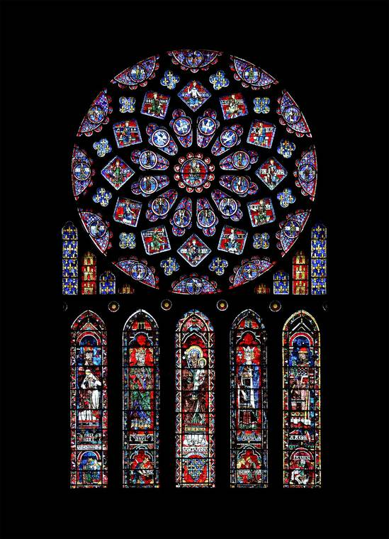<figcaption>The north rose window, Chartres · Eusebius · Public domain · resized · <a href="https://commons.wikimedia.org/wiki/File:Chartres_-_cath%C3%A9drale_-_rosace_nord.jpg" target="_blank" rel="noopener">Wikimedia Commons</a></figcaption></figure></div><ol class="rail"><li class="mv mv-metro"><div class="mv-line"><b>Hotel</b> <span class="arrow">→</span> <b>Paris Montparnasse</b></div><div class="links"><a class="lk lk-site" href="https://www.google.com/maps/dir/?api=1&amp;destination=Gare+Montparnasse%2C+Paris&amp;travelmode=transit" target="_blank" rel="noopener">Transit route</a><a class="lk lk-site" href="https://www.iledefrance-mobilites.fr/en" target="_blank" rel="noopener">Île-de-France Mobilités</a></div></li><li class="mv mv-train"><div class="mv-line"><b>Paris Montparnasse</b> <span class="arrow">→</span> <b>Chartres</b></div><p class="mv-meta">About 1 hour · approx 1 h<span class="cn">约 1 小时</span></p><div class="links"><a class="lk lk-site" href="https://www.sncf-connect.com/en-en/" target="_blank" rel="noopener">SNCF Connect</a><a class="lk lk-site" href="https://www.google.com/maps/search/?api=1&amp;query=Gare+de+Chartres" target="_blank" rel="noopener">Chartres station</a></div></li><li class="pl"><h3>Chartres Cathedral<span class="cn">Cathédrale de Chartres</span></h3><p class="sub">UNESCO · medieval stained glass<span class="cn">UNESCO · 中世纪彩色玻璃</span></p><p class="zh">For the windows you want a clear morning — &#x27;Chartres blue&#x27; doesn&#x27;t come out under cloud.<span class="cn">拍玻璃要挑晴天上午 —— 「沙特尔蓝」阴天出不来。</span></p><div class="links"><a class="lk lk-map" href="https://www.google.com/maps/search/?api=1&amp;query=Cathedrale+de+Chartres" target="_blank" rel="noopener">Map</a><a class="lk lk-site" href="https://www.cathedrale-chartres.org/" target="_blank" rel="noopener">Official site</a></div></li><li class="note n-info"><p class="note-title">A good window to be off the road<span class="cn">这段安排得对，别改</span></p><p class="zh">From the afternoon of the 24th to the 26th, museums and restaurants close and transport thins out across Italy, France and Spain. These are the days to be somewhere warm with people.<span class="cn">12/24 下午到 12/26 是意法西三国博物馆、餐厅关门、交通减班的窗口，你正好停在朋友家。</span></p></li></ol></section><section class="day" id="d-2026-12-24" data-date="2026-12-24"><header class="day-head"><div class="day-date"><span class="big">Dec 24</span><span class="day-wd">Thu<br>Day 13 of 23</span></div><div class="day-title"><p class="eyebrow">FR · CHR</p><h2>Christmas Eve · Chartres<span class="cn">平安夜 · Chartres</span></h2><p class="sleep"><span class="sleep-k">Staying</span> With friends&#x27; family<span class="cn">朋友父母家</span></p></div></header><div class="daylight"><div class="band" role="img" aria-label="Sunrise 08:44, sunset 17:03"><span class="lit" style="left:21.0%;width:64.0%"></span><span class="tick t0" style="left:0%">06</span><span class="tick" style="left:46.2%">12</span><span class="tick t19" style="left:100%">19</span></div><p class="sunline">Sunrise <b>08:44</b> · Sunset <b>17:03</b> · Daylight 8h19</p></div></section><section class="day" id="d-2026-12-25" data-date="2026-12-25"><header class="day-head"><div class="day-date"><span class="big">Dec 25</span><span class="day-wd">Fri<br>Day 14 of 23</span></div><div class="day-title"><p class="eyebrow">FR · CHR</p><h2>Christmas Day · Chartres<span class="cn">圣诞 · Chartres</span></h2><p class="sleep"><span class="sleep-k">Staying</span> With friends&#x27; family<span class="cn">朋友父母家</span></p></div></header><div class="daylight"><div class="band" role="img" aria-label="Sunrise 08:45, sunset 17:04"><span class="lit" style="left:21.2%;width:64.0%"></span><span class="tick t0" style="left:0%">06</span><span class="tick" style="left:46.2%">12</span><span class="tick t19" style="left:100%">19</span></div><p class="sunline">Sunrise <b>08:45</b> · Sunset <b>17:04</b> · Daylight 8h19</p></div><ol class="rail"><li class="note n-info"><p class="note-title">Almost everything in France is shut today<span class="cn">法国今天几乎全城关门</span></p><p class="zh">It picks up again on the 26th.<span class="cn">12/26 起恢复。</span></p></li></ol></section><section class="day" id="d-2026-12-26" data-date="2026-12-26"><header class="day-head"><div class="day-date"><span class="big">Dec 26</span><span class="day-wd">Sat<br>Day 15 of 23</span></div><div class="day-title"><p class="eyebrow">FR · PAR</p><h2>Chartres → Paris · the Before Sunset walk<span class="cn">Chartres → Paris · Before Sunset 路线</span></h2><p class="sleep"><span class="sleep-k">Staying</span> Paris<span class="cn">巴黎</span></p></div></header><div class="daylight"><div class="band" role="img" aria-label="Sunrise 08:43, sunset 16:59"><span class="lit" style="left:20.9%;width:63.6%"></span><span class="tick t0" style="left:0%">06</span><span class="tick" style="left:46.2%">12</span><span class="tick t19" style="left:100%">19</span></div><p class="sunline">Sunrise <b>08:43</b> · Sunset <b>16:59</b> · Daylight 8h16</p></div><div class="heros"><figure class="hero">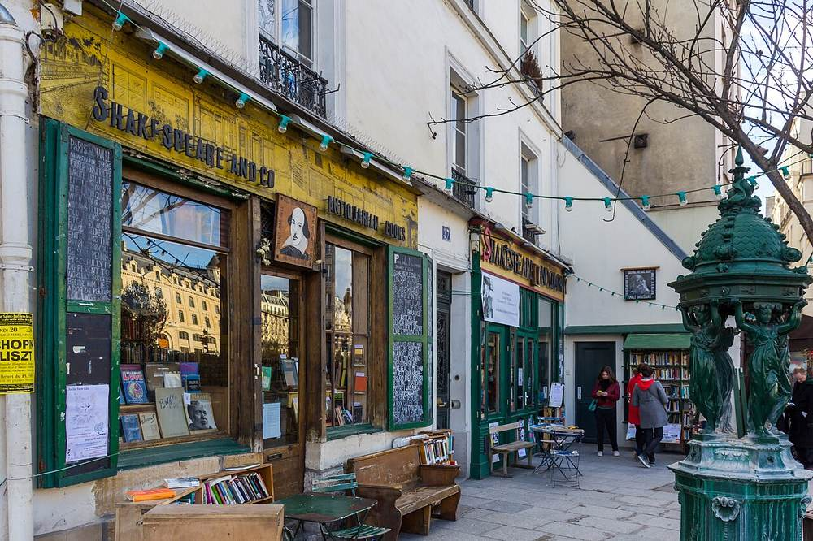<figcaption>Shakespeare and Company · Photograph by Mike Peel (www.mikepeel.net). · CC BY-SA 4.0 · resized · <a href="https://commons.wikimedia.org/wiki/File:Shakespeare_and_Company,_Paris.jpg" target="_blank" rel="noopener">Wikimedia Commons</a></figcaption></figure></div><ol class="rail"><li class="mv mv-train"><div class="mv-line"><b>Chartres</b> <span class="arrow">→</span> <b>Paris Montparnasse</b></div><p class="mv-meta">morning · About 1 hour · approx 1 h<span class="cn">约 1 小时</span></p><div class="links"><a class="lk lk-site" href="https://www.sncf-connect.com/en-en/" target="_blank" rel="noopener">SNCF Connect</a></div></li><li class="note n-film"><p class="note-title">Before Sunset is more or less shot in real time<span class="cn">《爱在日落黄昏时》几乎是实时拍的</span></p><p class="zh">From the bookshop to the café to her flat. Leaving at 14:00 puts the last two stops in the low light between 16:00 and 16:56 — the same light as the film.<span class="cn">从书店走到咖啡馆再到她家。14:00 出发，最后两站正好落在 16:00–16:56 的斜光里，跟电影的光对上。</span></p></li><li class="pl"><h3>Shakespeare and Company</h3><p class="sub">37 rue de la Bûcherie · where Jesse gives his reading<span class="cn">37 rue de la Bûcherie · Jesse 开读书会的书店</span></p><p class="zh">Opposite Notre-Dame, still trading. Photography is mostly not allowed inside — check the signs.<span class="cn">就在圣母院对面，还在营业。店里多数时候不让拍，进去前看告示。</span></p><div class="tags"><span class="tag tg-film">Before Sunset</span></div><div class="links"><a class="lk lk-map" href="https://www.google.com/maps/search/?api=1&amp;query=Shakespeare+and+Company+37+rue+de+la+Bucherie+Paris" target="_blank" rel="noopener">Map</a><a class="lk lk-site" href="https://www.shakespeareandcompany.com/" target="_blank" rel="noopener">Official site</a></div></li><li class="pl"><h3>rue Saint-Julien-le-Pauvre → rue Galande</h3><p class="sub">Where the walk begins · the old Studio Galande cinema<span class="cn">两人开始散步 · Studio Galande 老电影院</span></p><p class="zh">Narrow cobbled lanes.<span class="cn">窄巷石板，中焦最合适。</span></p><div class="tags"><span class="tag tg-film">Before Sunset</span></div><div class="links"><a class="lk lk-map" href="https://www.google.com/maps/search/?api=1&amp;query=rue+Galande+Paris" target="_blank" rel="noopener">Map</a><a class="lk lk-site" href="https://www.google.com/maps/dir/?api=1&amp;origin=37+rue+de+la+B%C3%BBcherie%2C+Paris&amp;destination=rue+Galande%2C+Paris&amp;travelmode=walking" target="_blank" rel="noopener">Walking route</a></div></li><li class="mv mv-walk"><div class="mv-line"><b>Rive gauche</b> <span class="arrow">→</span> <b>rue des Jardins-Saint-Paul</b></div><p class="mv-meta">Across Pont au Double or Pont Marie<span class="cn">过 Pont au Double 或 Pont Marie</span></p><div class="links"><a class="lk lk-site" href="https://www.google.com/maps/dir/?api=1&amp;origin=rue+Galande%2C+Paris&amp;destination=rue+des+Jardins-Saint-Paul%2C+Paris&amp;travelmode=walking" target="_blank" rel="noopener">Walking route</a></div></li><li class="pl"><h3>rue des Jardins-Saint-Paul → rue Eginhard → Saint-Paul-Saint-Louis</h3><p class="sub">Where Céline talks about her environmental work<span class="cn">Céline 讲环保工作那段</span></p><p class="zh">The wall along the street is the Philippe Auguste city wall — the longest surviving stretch of medieval wall in Paris.<span class="cn">路边就是菲利普·奥古斯特城墙遗迹，巴黎现存最长的一段中世纪城墙，粗糙石面 + 侧光。</span></p><div class="tags"><span class="tag tg-film">Before Sunset</span></div><div class="links"><a class="lk lk-map" href="https://www.google.com/maps/search/?api=1&amp;query=rue+des+Jardins-Saint-Paul+Paris" target="_blank" rel="noopener">Map</a><a class="lk lk-site" href="https://www.google.com/maps/search/?api=1&amp;query=rue+Eginhard+Paris" target="_blank" rel="noopener">rue Eginhard</a></div></li><li class="mv mv-metro"><div class="mv-line"><b>Saint-Paul</b> <span class="arrow">→</span> <b>Ledru-Rollin</b></div><p class="mv-meta">M1 → M8</p><div class="links"><a class="lk lk-site" href="https://www.google.com/maps/dir/?api=1&amp;origin=Saint-Paul+metro%2C+Paris&amp;destination=Cour+de+l%27%C3%89toile+d%27Or%2C+75+rue+du+Faubourg+Saint-Antoine%2C+Paris&amp;travelmode=transit" target="_blank" rel="noopener">Transit route</a></div></li><li class="pl"><h3>Cour de l&#x27;Étoile d&#x27;Or</h3><p class="sub">Céline&#x27;s courtyard in the final scene · rue du Faubourg Saint-Antoine<span class="cn">片尾 Céline 的公寓庭院 · rue du Faubourg Saint-Antoine</span></p><p class="zh">A hidden old craftsmen&#x27;s courtyard — the most cinematic stop on the walk.<span class="cn">隐蔽的老工匠院子，全程最有电影感的一个点。</span></p><div class="tags"><span class="tag tg-film">Before Sunset</span></div><div class="links"><a class="lk lk-map" href="https://www.google.com/maps/search/?api=1&amp;query=Cour+de+l%27Etoile+d%27Or+rue+du+Faubourg+Saint-Antoine+Paris" target="_blank" rel="noopener">Map</a></div></li><li class="pl"><h3>Le Pure Café</h3><p class="sub">14 rue Jean Macé · end of the walk (M9 Charonne)<span class="cn">14 rue Jean Macé · 路线终点（M9 Charonne）</span></p><p class="zh">The café where they work out they were both in New York at the same time. Still open. It has no website — third-party listings say Monday to Friday 07:30–02:00, and Saturday hours aren&#x27;t published, so the walk may be better on Monday the 28th.<span class="cn">两人聊「原来我们同时在纽约」那场戏的咖啡馆，还在开。坐下喝一杯。⚠️ 它没有官网，能查到的只有第三方页面写周一至周五 07:30–02:00，周六几点开查不到 —— 想稳妥就把这条路线挪到 12/28 周一走。</span></p><div class="tags"><span class="tag tg-film">Before Sunset</span></div><div class="links"><a class="lk lk-map" href="https://www.google.com/maps/search/?api=1&amp;query=Le+Pure+Cafe+14+rue+Jean+Mace+Paris" target="_blank" rel="noopener">Map</a><a class="lk lk-site" href="https://www.google.com/maps/dir/?api=1&amp;origin=Cour+de+l%27%C3%89toile+d%27Or%2C+Paris&amp;destination=14+rue+Jean+Mac%C3%A9%2C+Paris&amp;travelmode=walking" target="_blank" rel="noopener">Walking route</a></div></li><li class="note n-list"><details><summary>What to eat in Paris<span class="cn">Paris 吃什么</span></summary><ul class="bullets"><li>A croissant and a coffee, standing at the counter</li><li>Steak frites in an old-fashioned bistro</li><li>Falafel on rue des Rosiers</li><li>Oysters and a glass of white</li><li>Cheese from a fromagerie, eaten on a bench</li></ul></details></li></ol></section><section class="day" id="d-2026-12-27" data-date="2026-12-27"><header class="day-head"><div class="day-date"><span class="big">Dec 27</span><span class="day-wd">Sun<br>Day 16 of 23</span></div><div class="day-title"><p class="eyebrow">FR · PAR</p><h2>Paris · free day<span class="cn">Paris · 自由日</span></h2><p class="sleep"><span class="sleep-k">Staying</span> Paris<span class="cn">巴黎</span></p></div></header><div class="daylight"><div class="band" role="img" aria-label="Sunrise 08:44, sunset 17:00"><span class="lit" style="left:21.0%;width:63.6%"></span><span class="tick t0" style="left:0%">06</span><span class="tick" style="left:46.2%">12</span><span class="tick t19" style="left:100%">19</span></div><p class="sunline">Sunrise <b>08:44</b> · Sunset <b>17:00</b> · Daylight 8h16</p></div><ol class="rail"><li class="pl"><h3>Coulée verte René-Dumont</h3><p class="sub">A park on a disused viaduct · the original the New York High Line copied<span class="cn">高架废铁道公园 · 纽约 High Line 的原型</span></p><p class="zh">The stairs up are on Avenue Daumesnil (M1 / M8 Reuilly-Diderot). The trees are bare in December but the elevated view still works.<span class="cn">入口在 Avenue Daumesnil 的楼梯（M1 / M8 Reuilly-Diderot）。12 月树秃了，高架视角仍好拍。</span></p><div class="links"><a class="lk lk-map" href="https://www.google.com/maps/search/?api=1&amp;query=Coulee+verte+Rene-Dumont+Paris" target="_blank" rel="noopener">Map</a><a class="lk lk-site" href="https://www.google.com/maps/dir/?api=1&amp;destination=Reuilly-Diderot%2C+Paris&amp;travelmode=transit" target="_blank" rel="noopener">Transit route</a></div></li><li class="pl"><h3>Quai de la Tournelle</h3><p class="sub">Where they get on the boat · beside Notre-Dame<span class="cn">两人上游船的地方 · 圣母院边</span></p><div class="tags"><span class="tag tg-film">Before Sunset</span></div><div class="links"><a class="lk lk-map" href="https://www.google.com/maps/search/?api=1&amp;query=Quai+de+la+Tournelle+Paris" target="_blank" rel="noopener">Map</a></div></li><li class="pl"><h3>rue des Rosiers</h3><p class="sub">Marais · falafel</p><div class="links"><a class="lk lk-map" href="https://www.google.com/maps/search/?api=1&amp;query=rue+des+Rosiers+Paris" target="_blank" rel="noopener">Map</a></div></li></ol></section><section class="day" id="d-2026-12-28" data-date="2026-12-28"><header class="day-head"><div class="day-date"><span class="big">Dec 28</span><span class="day-wd">Mon<br>Day 17 of 23</span></div><div class="day-title"><p class="eyebrow">FR · PAR</p><h2>Paris · a day trip (one of two)<span class="cn">Paris · 一日游（二选一）</span></h2><p class="sleep"><span class="sleep-k">Staying</span> Paris<span class="cn">巴黎</span></p></div></header><div class="daylight"><div class="band" role="img" aria-label="Sunrise 08:44, sunset 17:01"><span class="lit" style="left:21.0%;width:63.7%"></span><span class="tick t0" style="left:0%">06</span><span class="tick" style="left:46.2%">12</span><span class="tick t19" style="left:100%">19</span></div><p class="sunline">Sunrise <b>08:44</b> · Sunset <b>17:01</b> · Daylight 8h17</p></div><ol class="rail"><li class="pl"><h3>Reims</h3><p class="sub">About 45 minutes by TGV · Champagne country<span class="cn">TGV 约 45 分钟 · 香槟区</span></p><div class="links"><a class="lk lk-map" href="https://www.google.com/maps/search/?api=1&amp;query=Reims" target="_blank" rel="noopener">Map</a><a class="lk lk-site" href="https://www.sncf-connect.com/en-en/" target="_blank" rel="noopener">SNCF Connect</a></div></li><li class="pl"><h3>Château de Chambord, Loire<span class="cn">Loire 城堡 · Chambord</span></h3><p class="sub">There and back in a day<span class="cn">当天往返</span></p><div class="links"><a class="lk lk-map" href="https://www.google.com/maps/search/?api=1&amp;query=Chateau+de+Chambord" target="_blank" rel="noopener">Map</a><a class="lk lk-site" href="https://www.sncf-connect.com/en-en/" target="_blank" rel="noopener">SNCF Connect</a></div></li><li class="note n-info"><p class="note-title">French Christmas markets usually pack up around 24–26 December<span class="cn">法国圣诞市集通常 12/24–26 前后就撤</span></p><p class="zh">Not worth a special trip.<span class="cn">别为这个专门跑。</span></p></li></ol></section><section class="day" id="d-2026-12-29" data-date="2026-12-29"><header class="day-head"><div class="day-date"><span class="big">Dec 29</span><span class="day-wd">Tue<br>Day 18 of 23</span></div><div class="day-title"><p class="eyebrow">FR · MRS</p><h2>Paris → Marseille</h2><p class="sleep"><span class="sleep-k">Staying</span> Marseille<span class="cn">马赛</span></p></div></header><div class="daylight"><div class="band" role="img" aria-label="Sunrise 08:10, sunset 17:11"><span class="lit" style="left:16.7%;width:69.4%"></span><span class="tick t0" style="left:0%">06</span><span class="tick" style="left:46.2%">12</span><span class="tick t19" style="left:100%">19</span></div><p class="sunline">Sunrise <b>08:10</b> · Sunset <b>17:11</b> · Daylight 9h01</p></div><div class="heros"><figure class="hero">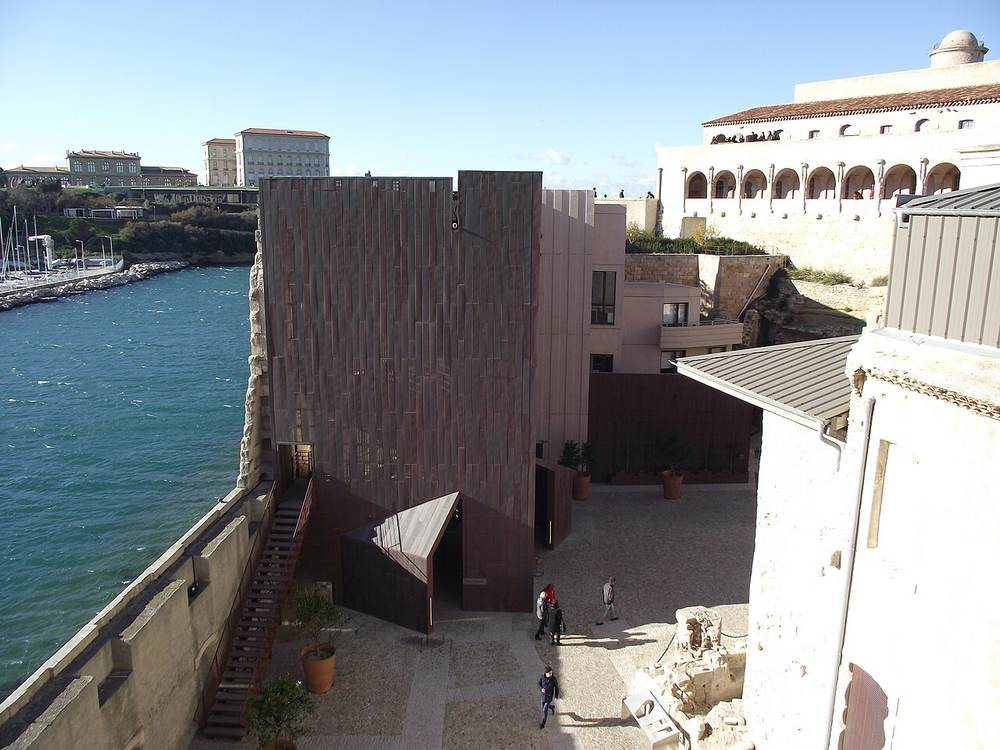<figcaption>MuCEM and Fort Saint-Jean · Fred Romero from Paris, France · CC BY 2.0 · resized · <a href="https://commons.wikimedia.org/wiki/File:Marseille_-_MuCEM_Fort_Saint-Jean_(16225557268).jpg" target="_blank" rel="noopener">Wikimedia Commons</a></figcaption></figure></div><ol class="rail"><li class="mv mv-train"><div class="mv-line"><b>Paris Gare de Lyon</b> <span class="arrow">→</span> <b>Marseille Saint-Charles</b></div><p class="mv-meta">morning · TGV / OUIGO · fastest 3h03<span class="cn">TGV / OUIGO · 最快 3h03</span></p><p class="zh">Normally 24 trains a day, about 21 of them direct.<span class="cn">平时每天 24 班、约 21 班直达（Trainline 线路页）。</span></p><div class="links"><a class="lk lk-site" href="https://www.sncf-connect.com/en-en/" target="_blank" rel="noopener">SNCF Connect</a></div></li><li class="pl"><h3>Vieux-Port</h3><p class="sub">The old harbour · the morning fish stalls<span class="cn">老港 · 早市海鲜摊</span></p><div class="links"><a class="lk lk-map" href="https://www.google.com/maps/search/?api=1&amp;query=Vieux-Port+Marseille" target="_blank" rel="noopener">Map</a><a class="lk lk-site" href="https://www.google.com/maps/dir/?api=1&amp;origin=Marseille+Saint-Charles&amp;destination=Vieux-Port%2C+Marseille&amp;travelmode=transit" target="_blank" rel="noopener">Transit route</a><a class="lk lk-site" href="https://www.rtm.fr/" target="_blank" rel="noopener">RTM</a></div></li><li class="pl"><h3>Le Panier</h3><p class="sub">The old quarter · painted walls and street art<span class="cn">老城 · 彩色墙面和涂鸦</span></p><div class="links"><a class="lk lk-map" href="https://www.google.com/maps/search/?api=1&amp;query=Le+Panier+Marseille" target="_blank" rel="noopener">Map</a></div></li><li class="pl"><h3>MuCEM</h3><p class="sub">The building is better than the exhibitions<span class="cn">建筑比展览更值得看</span></p><p class="zh">A concrete lattice and a footbridge — geometry, and silhouettes against the light.<span class="cn">混凝土花格墙 + 天桥，几何构图，逆光剪影。</span></p><div class="links"><a class="lk lk-map" href="https://www.google.com/maps/search/?api=1&amp;query=MuCEM+Marseille" target="_blank" rel="noopener">Map</a><a class="lk lk-site" href="https://www.mucem.org/en" target="_blank" rel="noopener">Official site</a></div></li><li class="pl"><h3>Notre-Dame de la Garde</h3><p class="sub">The highest point in the city · sunset 17:03<span class="cn">全城最高点 · 日落 17:03</span></p><div class="links"><a class="lk lk-map" href="https://www.google.com/maps/search/?api=1&amp;query=Notre-Dame+de+la+Garde" target="_blank" rel="noopener">Map</a></div></li><li class="note n-list"><details><summary>What to eat in Marseille<span class="cn">Marseille 吃什么</span></summary><ul class="bullets"><li>Bouillabaisse, if you&#x27;re splitting the cost</li><li>Panisse — chickpea chips</li><li>Navettes — orange-blossom biscuits</li><li>Pastis with water and ice</li><li>Pizza from a van, Marseille-style</li></ul></details></li></ol></section><section class="day" id="d-2026-12-30" data-date="2026-12-30"><header class="day-head"><div class="day-date"><span class="big">Dec 30</span><span class="day-wd">Wed<br>Day 19 of 23</span></div><div class="day-title"><p class="eyebrow">ES · LLE</p><h2>Marseille → Barcelona → Lleida</h2><p class="sleep"><span class="sleep-k">Staying</span> With friends, Lleida<span class="cn">朋友家 · Lleida</span></p></div></header><div class="daylight"><div class="band" role="img" aria-label="Sunrise 08:24, sunset 17:36"><span class="lit" style="left:18.5%;width:70.8%"></span><span class="tick t0" style="left:0%">06</span><span class="tick" style="left:46.2%">12</span><span class="tick t19" style="left:100%">19</span></div><p class="sunline">Sunrise <b>08:24</b> · Sunset <b>17:36</b> · Daylight 9h12</p></div><div class="heros"><figure class="hero">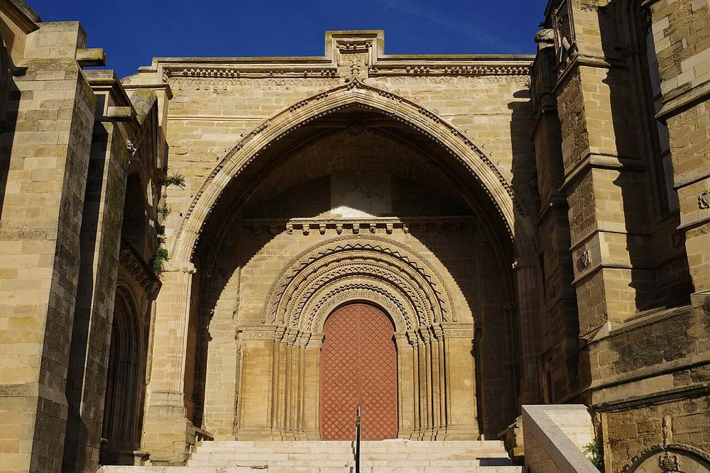<figcaption>La Seu Vella, Lleida · IM027 · CC BY-SA 4.0 · resized · <a href="https://commons.wikimedia.org/wiki/File:Seu_Vella_Lleida_Catalunya_Porta_dels_Fillols.jpg" target="_blank" rel="noopener">Wikimedia Commons</a></figcaption></figure></div><ol class="rail"><li class="mv mv-train"><div class="mv-line"><b>Marseille Saint-Charles</b> <span class="arrow">→</span> <b>Barcelona Sants</b></div><p class="mv-meta">Direct, run jointly by Renfe and SNCF · fastest 4h32<span class="cn">Renfe-SNCF 联营直达 · 最快 4h32</span></p><p class="zh">The most fragile leg of the trip: normally only 4 trains a day and roughly one of them direct. Book on the first day of sale; without a direct train it means changing around Montpellier.<span class="cn">🔴 这条是全程最脆的一段：Trainline 线路页写平时每天只有 4 班、其中**直达大约只有 1 班**。开售第一天就订，订不到直达就得在蒙彼利埃一带转车。</span></p><div class="links"><a class="lk lk-site" href="https://www.renfe.com/es/en" target="_blank" rel="noopener">Renfe</a><a class="lk lk-site" href="https://www.sncf-connect.com/en-en/" target="_blank" rel="noopener">SNCF Connect</a></div></li><li class="mv mv-train"><div class="mv-line"><b>Barcelona Sants</b> <span class="arrow">→</span> <b>Lleida Pirineus</b></div><p class="mv-meta">AVE high speed · approx 1 h<span class="cn">AVE 高铁 · 约 1 小时</span></p><p class="zh">Normally 14 direct trains a day.<span class="cn">平时每天 14 班直达（Trainline 线路页）。</span></p><div class="links"><a class="lk lk-site" href="https://www.renfe.com/es/en" target="_blank" rel="noopener">Renfe</a><a class="lk lk-site" href="https://www.google.com/maps/search/?api=1&amp;query=Lleida+Pirineus+station" target="_blank" rel="noopener">Lleida station</a></div></li></ol></section><section class="day" id="d-2026-12-31" data-date="2026-12-31"><header class="day-head"><div class="day-date"><span class="big">Dec 31</span><span class="day-wd">Thu<br>Day 20 of 23</span></div><div class="day-title"><p class="eyebrow">ES · LLE</p><h2>New Year&#x27;s Eve · Lleida<span class="cn">跨年 · Lleida</span></h2><p class="sleep"><span class="sleep-k">Staying</span> With friends<span class="cn">朋友家</span></p></div></header><div class="daylight"><div class="band" role="img" aria-label="Sunrise 08:24, sunset 17:37"><span class="lit" style="left:18.5%;width:70.9%"></span><span class="tick t0" style="left:0%">06</span><span class="tick" style="left:46.2%">12</span><span class="tick t19" style="left:100%">19</span></div><p class="sunline">Sunrise <b>08:24</b> · Sunset <b>17:37</b> · Daylight 9h13</p></div><ol class="rail"><li class="note n-info"><p class="note-title">Much of Spain closes on 31 December and 1 January<span class="cn">12/31–1/1 西班牙大面积关门</span></p><p class="zh">Which is fine — I&#x27;ll be with friends.<span class="cn">没关系，你在朋友家。</span></p></li></ol></section><section class="day" id="d-2027-01-01" data-date="2027-01-01"><header class="day-head"><div class="day-date"><span class="big">Jan 1</span><span class="day-wd">Fri<br>Day 21 of 23</span></div><div class="day-title"><p class="eyebrow">ES · LLE</p><h2>Lleida</h2><p class="sleep"><span class="sleep-k">Staying</span> With friends<span class="cn">朋友家</span></p></div></header><div class="daylight"><div class="band" role="img" aria-label="Sunrise 08:24, sunset 17:38"><span class="lit" style="left:18.5%;width:71.0%"></span><span class="tick t0" style="left:0%">06</span><span class="tick" style="left:46.2%">12</span><span class="tick t19" style="left:100%">19</span></div><p class="sunline">Sunrise <b>08:24</b> · Sunset <b>17:38</b> · Daylight 9h14</p></div></section><section class="day" id="d-2027-01-02" data-date="2027-01-02"><header class="day-head"><div class="day-date"><span class="big">Jan 2</span><span class="day-wd">Sat<br>Day 22 of 23</span></div><div class="day-title"><p class="eyebrow">ES · BCN</p><h2>Lleida → Barcelona · a full day<span class="cn">Lleida → Barcelona · 一整天</span></h2><p class="sleep"><span class="sleep-k">Staying</span> Barcelona<span class="cn">巴塞罗那</span></p></div></header><div class="daylight"><div class="band" role="img" aria-label="Sunrise 08:18, sunset 17:33"><span class="lit" style="left:17.7%;width:71.2%"></span><span class="tick t0" style="left:0%">06</span><span class="tick" style="left:46.2%">12</span><span class="tick t19" style="left:100%">19</span></div><p class="sunline">Sunrise <b>08:18</b> · Sunset <b>17:33</b> · Daylight 9h15</p></div><div class="heros"><figure class="hero">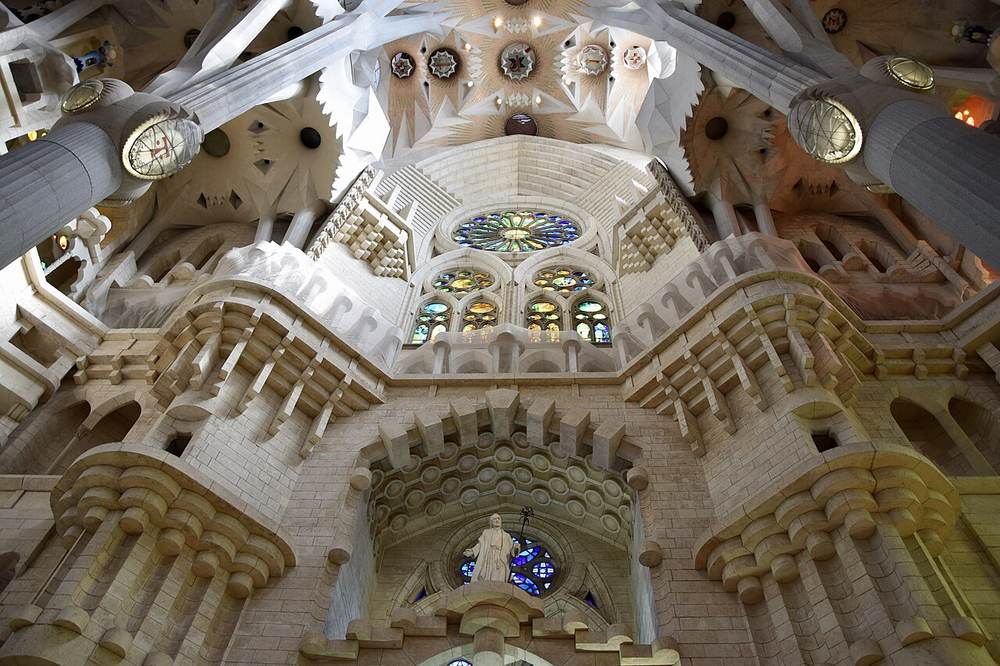<figcaption>Stained glass in the Sagrada Família · Ank Kumar · CC BY-SA 4.0 · resized · <a href="https://commons.wikimedia.org/wiki/File:Stained_Glass_paintings_at_Sagrada_Familia,_Barcelona_(_Ank_Kumar)_09.jpg" target="_blank" rel="noopener">Wikimedia Commons</a></figcaption></figure></div><ol class="rail"><li class="mv mv-train"><div class="mv-line"><b>Lleida Pirineus</b> <span class="arrow">→</span> <b>Barcelona Sants</b></div><p class="mv-meta">early · approx 1 h<span class="cn">约 1 小时</span></p><p class="zh">Normally 14 direct trains a day.<span class="cn">平时每天 14 班直达。</span></p><div class="links"><a class="lk lk-site" href="https://www.renfe.com/es/en" target="_blank" rel="noopener">Renfe</a></div></li><li class="pl"><h3>Sagrada Família</h3><p class="sub">Timed ticket<span class="cn">时段票</span></p><p class="zh">For the windows: blues and greens on the east side in the morning, oranges and reds on the west in the afternoon. Strongest around midday on a clear day.<span class="cn">看彩窗：上午东侧蓝绿，下午西侧橙红。晴天中午前后色彩最饱和。</span></p><dl class="facts"><dt>Ticket<span class="cn">门票</span></dt><dd>about €26<span class="cn">约 €26</span></dd></dl><div class="tags"><span class="tag tg-book">Book a slot in advance<span class="cn">提前订时段</span></span></div><div class="links"><a class="lk lk-map" href="https://www.google.com/maps/search/?api=1&amp;query=Sagrada+Familia" target="_blank" rel="noopener">Map</a><a class="lk lk-site" href="https://www.google.com/maps/dir/?api=1&amp;origin=Barcelona+Sants&amp;destination=Sagrada+Fam%C3%ADlia%2C+Barcelona&amp;travelmode=transit" target="_blank" rel="noopener">Transit route</a><a class="lk lk-site" href="https://sagradafamilia.org/en/" target="_blank" rel="noopener">Book online</a><a class="lk lk-site" href="https://www.tmb.cat/en/home" target="_blank" rel="noopener">TMB</a></div></li><li class="pl"><h3>Park Güell → Casa Batlló / La Pedrera</h3><p class="sub">Passeig de Gràcia</p><div class="links"><a class="lk lk-site" href="https://www.google.com/maps/search/?api=1&amp;query=Park+Guell" target="_blank" rel="noopener">Park Güell</a><a class="lk lk-site" href="https://www.google.com/maps/search/?api=1&amp;query=Casa+Batllo" target="_blank" rel="noopener">Casa Batlló</a></div></li><li class="pl"><h3>Barri Gòtic → La Rambla → Mercat de la Boqueria → Barceloneta</h3><p class="sub">Walking down to the sea<span class="cn">走到海边</span></p><div class="links"><a class="lk lk-site" href="https://www.google.com/maps/search/?api=1&amp;query=Mercat+de+la+Boqueria" target="_blank" rel="noopener">Boqueria</a><a class="lk lk-site" href="https://www.google.com/maps/search/?api=1&amp;query=Barceloneta+Barcelona" target="_blank" rel="noopener">Barceloneta</a></div></li><li class="note n-list"><details><summary>What to eat in Barcelona<span class="cn">Barcelona 吃什么</span></summary><ul class="bullets"><li>Pa amb tomàquet<span class="cn">Pa amb tomàquet 番茄面包</span></li><li>Calçots, if they&#x27;re in season<span class="cn">Tapas 一个人最灵活</span></li><li>Fideuà — like paella, made with noodles<span class="cn">Crema catalana · Vermut</span></li><li>Crema catalana<span class="cn">Turrón 杏仁糖，12 月到处都有</span></li><li>Vermut before lunch<span class="cn">Calçots 烤大葱通常 1 月起，碰运气</span></li></ul></details></li></ol></section><section class="day" id="d-2027-01-03" data-date="2027-01-03"><header class="day-head"><div class="day-date"><span class="big">Jan 3</span><span class="day-wd">Sun<br>Day 23 of 23</span></div><div class="day-title"><p class="eyebrow">CA · YUL</p><h2>Barcelona → Montréal</h2><p class="sleep"><span class="sleep-k">Staying</span> Home<span class="cn">到家</span></p></div></header><ol class="rail"><li class="mv mv-metro"><div class="mv-line"><b>Hotel</b> <span class="arrow">→</span> <b>Barcelona–El Prat (BCN)</b></div><p class="mv-meta">before 10:30</p><div class="links"><a class="lk lk-site" href="https://www.google.com/maps/dir/?api=1&amp;destination=Josep+Tarradellas+Barcelona-El+Prat+Airport&amp;travelmode=transit" target="_blank" rel="noopener">Transit route</a><a class="lk lk-site" href="https://www.tmb.cat/en/home" target="_blank" rel="noopener">TMB</a></div></li><li class="mv mv-flight"><div class="mv-line"><b>Barcelona (BCN)</b> <span class="arrow">→</span> <b>Montréal-Trudeau (YUL)</b></div><p class="mv-meta">13:35 · 16:10 · Air Canada, direct · 8h35<span class="cn">Air Canada 直飞 · 8h35</span></p><div class="links"><a class="lk lk-site" href="https://www.aircanada.com/" target="_blank" rel="noopener">Air Canada</a></div></li></ol></section>
</main>
<footer class="wrap foot">Sunrise and sunset computed per city. Photos are public-domain or Creative Commons.</footer>
